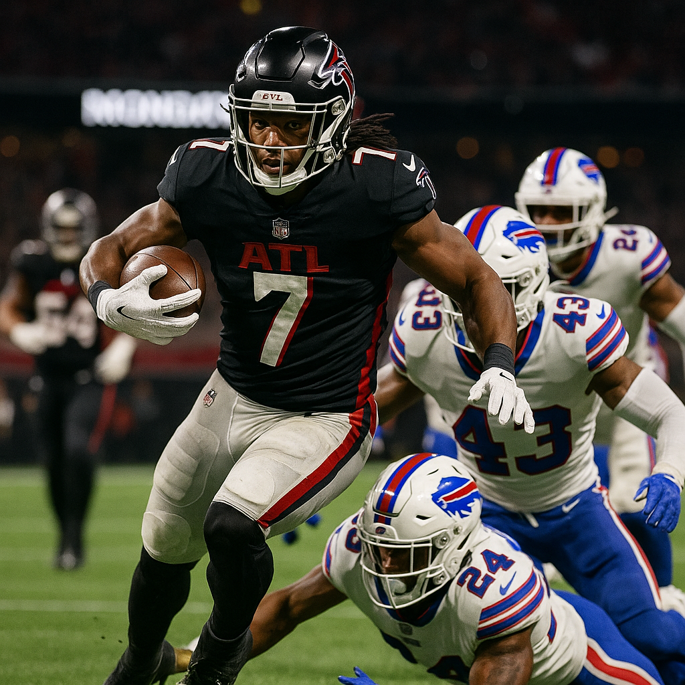
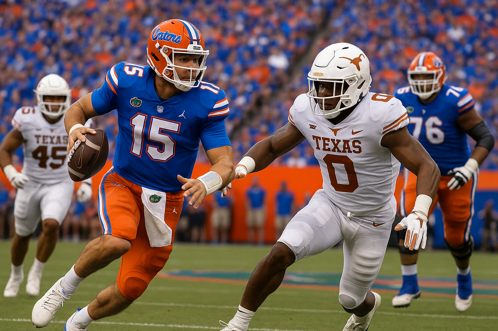
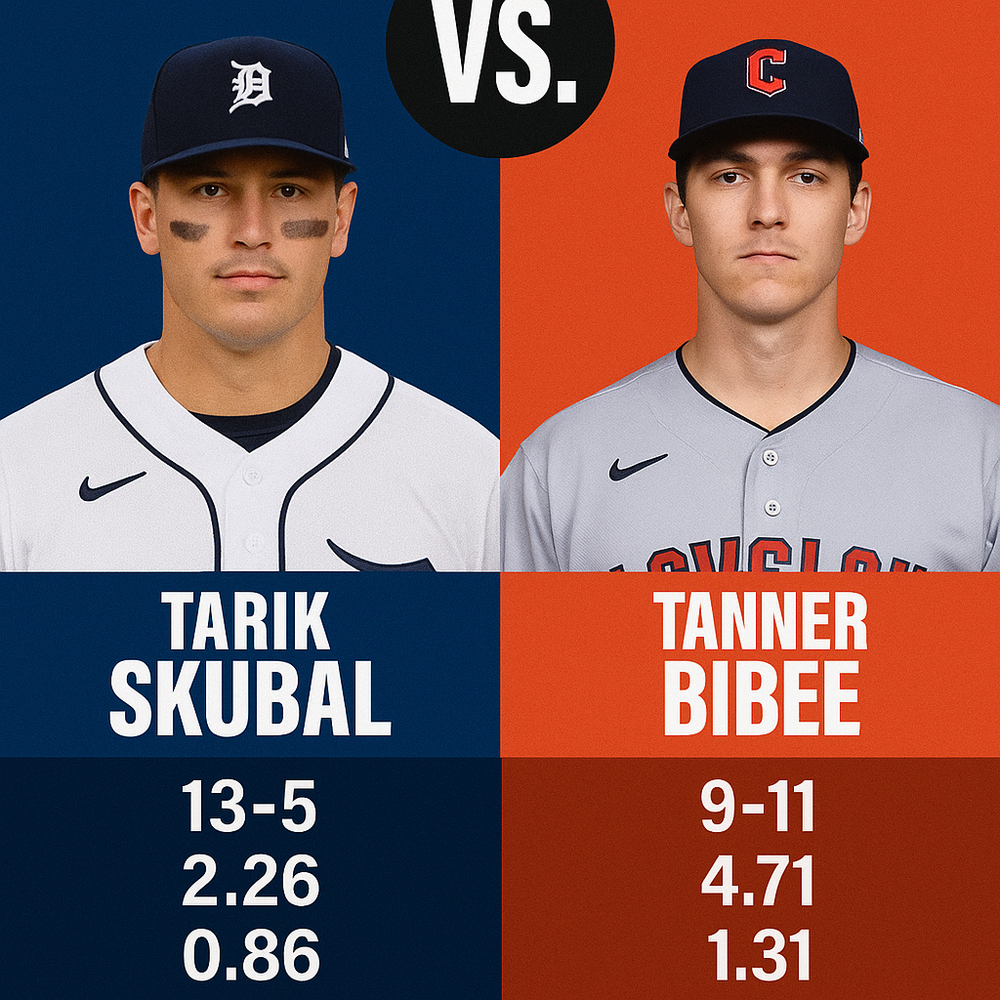

Monday Night Football Deep Dive No Stone Left Unturned October 13 2025
Posted: 9:19 AM, October 13, 2025

Bills are the better team on paper and every square alive is hammering them in primetime. Josh Allen, national TV, heavy public action, it all feels predictable. But sometimes the numbers and the gut line up, and this is one of those nights. Atlanta +4 at home is the side that makes football sense and betting sense.
The Bijan Robinson factor
Let’s start where the real mismatch lives. Bijan Robinson against this Buffalo run defense is the story of the night. Buffalo ranks 28 in rush defense allowing 145.6 yards per game. They give up the third highest explosive run rate to running backs and 6.7 yards after missed tackles, which is fourth worst in the league. Robinson is averaging 4.9 yards per carry and leads the NFL with 146 scrimmage yards per game. He’s creating 4.2 yards after contact per rush and when he forces a missed tackle, it turns into more than seven yards on average. This is a premium back against a soft interior defense that hasn’t tackled cleanly all season. If Atlanta keeps him involved and stays ahead of the sticks, they can dictate pace all night.
Atlanta’s defense is criminally underrated
Atlanta’s defense is flat out elite right now. They lead the league in total defense at 244 yards per game allowed and in pass defense at 135 passing yards per game. They’ve given up the lowest completion percentage in football at 58 percent and generate pressure on nearly 39 percent of dropbacks. They’re allowing just 3.1 yards after the catch, which is the best mark in the league. That matters because more than half of Josh Allen’s passing yards this season have come after the catch. This defense is built to take away what Buffalo does best. It forces everything to happen in front of them and makes Allen play patient football, which is not his comfort zone.
Buffalo’s recent form and issues
Buffalo is coming off an ugly 23 to 20 home loss to New England on Sunday night. Three turnovers, eleven penalties, and their first game all season under thirty points. Josh Allen called the offense piss poor. This is a team that’s looked sloppy and inconsistent against physical defenses. They’ve also got injuries piling up. Linebacker Matt Milano is still out. Damar Hamlin is on injured reserve. The defense doesn’t have the same speed or leadership in the middle, and it shows when tackling in space. Buffalo is 0 and 3 against the spread as a big favorite this year and just 1 and 3 when laying more than four and a half. They’ve been overvalued and underdelivering every time the market expects dominance.
Situational edge and market movement
This is the right kind of setup for Atlanta. They come in off a bye week with extra prep and health. Buffalo is traveling on short rest after a physical division loss. Atlanta is 7 and 1 straight up in their last eight Monday night games, and Mercedes Benz Stadium will be loud. Both teams rank top two in time of possession which points to a tight, low scoring game where every possession matters. The line opened Buffalo minus five and a half and moved toward Atlanta even with heavy public money on the Bills. That tells you sharp bettors are backing the home dog and the books respect it. When a number drops against the popular side, there’s a reason.
Quarterback play and control
Michael Penix Jr. doesn’t have to be spectacular tonight. He just has to protect the football and execute the plan. He looked his best before the bye completing over 77 percent for 313 yards and two scores. The key is rhythm and composure, not forcing big plays. Against a Buffalo defense missing key linebackers, he’ll have chances to attack the middle of the field and hit outlet throws to Robinson and London. Atlanta’s offense isn’t flashy, but it’s built to shorten games and capitalize on mistakes. That is exactly how you beat a team that wants to run up tempo and show off the big arm.
Game flow and what it means
Expect a measured first quarter while both sides feel out the matchups. Atlanta will test the ground early and keep feeding Bijan until Buffalo proves it can stop him. The Falcons defense will make Buffalo earn yards the hard way. If they hold red zone trips to field goals and win the turnover margin, the math favors Atlanta. Buffalo might flash but they haven’t proven they can cover big numbers on the road after a sloppy loss. Atlanta has rest, revenge, and rhythm in their favor. This game smells like a field goal either way and the points matter.
The feel
I’ve been doing this long enough to recognize when something doesn’t look right, and this line doesn’t. Everyone expects Buffalo to bounce back under the lights, but the football side says otherwise. Home dog with rest, elite defense, advantage in the run game, and a number moving the wrong way for the public. Atlanta’s physicality and composure win the night or at least keep it well inside the number.
The pick
Atlanta Falcons +4 3 Units
49ers +3 vs Buccaneers Why the Niners Are the Right Side
Posted: 3:48 AM, October 12, 2025
Matchup overview
San Francisco draws Tampa Bay in a physical game that will be decided by protection, tackling, and red zone execution. We are taking the points with the Niners because their structure under Kyle Shanahan travels and because the defense is trending in the right direction with clean communication and speed at all three levels.
Quarterback plan and rhythm throws
Mac Jones is at his best when the ball comes out on time. Shanahan’s script creates simple answers through motion, bunch, and play action. That puts Jones in rhythm on slants, outs, and middle sit routes to Jauan Jennings and Brandon Aiyuk and gives Christian McCaffrey outlets that turn into efficient gains. The quick game also slows Tampa Bay’s rush and sets up shot concepts later when safeties squeeze.
Skill group usage and spacing
McCaffrey remains the engine on early downs and in the red area. Aiyuk works isolation routes and wins leverage at the top of the stem. Jennings returns to full action and provides strength on third down with tough catches through contact. George Kittle occupies safeties and creates voids behind linebackers. The mix of motion and bunch releases stresses rules and opens high percentage throws that move chains.
Trenches and protection
The 49ers offensive line is tasked with firm pockets on the interior and clean edges to keep the timing intact. The plan uses slides, chips, and keepers to change launch points. When San Francisco lives in second and medium, Shanahan’s menu expands. That is where the layups arrive and where Tampa Bay must decide between bracketing Aiyuk or closing on McCaffrey.
Niners defense vs Buccaneers offense
San Francisco's front four can win without extra bodies. The edge group squeezes the arc while Javon Hargrave provides interior push. That condenses throwing lanes for Baker Mayfield and invites hurried decisions. Fred Warner and Dre Greenlaw erase intermediate windows and rally to the flat. The coverage goal is simple. Take away explosives, win third downs, and force Tampa Bay to string long drives together.
Tampa Bay tendencies and pressure points
The Buccaneers are at their best when play action buys time and when they get plus field position. San Francisco can tilt the field by winning first down, limiting yards after contact, and finishing tackles in space. The Bucs have leaned on methodical possessions when explosives are not available. That is the game the Niners want because it narrows possession counts and raises the value of each stop.
Situational football
Third downs and red zone trips decide this one. The 49ers excel when they stay ahead of the sticks with early down success from McCaffrey and quick answers to pressure. In the red area, condensed formations create leverage for Kittle and backside glance routes for Aiyuk. Defensively, the Niners have tightened inside the twenty by winning on first down and forcing throws into short grass where rally and tackle takes over.
Special teams and hidden yards
Field position is often the quiet separator in close games. San Francisco’s coverage units have improved and the return game has been steady. Clean operation on punts and kicks combined with disciplined penalty control can swing two or three first downs of value over four quarters.
Trends and coaching
Shanahan teams have responded well after tight games with sharper openers and emphasis on ball security. The Niners profile improves as an underdog because the defense reduces variance and the offense can live in efficient concepts without chasing. Tampa Bay has struggled to create separation against winning opponents when explosives are limited.
Game script
Expect a measured first quarter while both staffs probe matchups. San Francisco leans on McCaffrey and rhythm throws to Jennings and Aiyuk. A mid game surge arrives from a short field after a defensive stop. Tampa Bay answers with a drive or two, but the Niners keep the lid on explosives and force field goals. In the fourth quarter the 49ers lean on clock control and play action to finish possessions.
The pick
49ERS +3
Free Pick of the Day: Why North Texas is the Smart Play Against Ranked South Florida
Posted: 9:15 AM, October 10, 2025
Friday night football under the lights in Denton, Texas gives us one of the most intriguing matchups of Week 7, and after diving deep into every angle of this game, I'm convinced the market has this one wrong. Number 24 South Florida comes into DATCU Stadium with a 4 and 1 record and plenty of hype after early season wins over Boise State and Florida, but the undefeated North Texas Mean Green are being disrespected at home, and we're going to take advantage of it.
The line opened with North Texas as a small favorite and has actually moved toward South Florida, now sitting at North Texas minus 2 depending on where you shop. The total opened around 68 and has settled in the mid to high 60s. What's fascinating here is that despite North Texas being 5 and 0 straight up and playing at home, the public is split almost evenly, with a slight lean toward the Bulls. That tells me the sharp money sees value on the home team, and after breaking down the film, the stats, and the situational factors, I completely agree.
The North Texas Story Nobody is Talking About
Let's start with the elephant in the room. North Texas has been one of the most underrated teams in college football this season, and it starts with their quarterback situation. Drew Mestemaker is a redshirt freshman who was a walk on, and his last start at quarterback before this season was in ninth grade. Let that sink in for a moment. This kid was playing safety and punting in high school, got noticed by a quarterback trainer who happened to coach Patrick Mahomes, and ended up getting invited to walk on at North Texas.
When starter Chandler Morris transferred to Virginia after last season, Mestemaker got his shot in the First Responder Bowl and threw for 393 yards with two touchdowns. Fast forward to this season, and he beat out a more experienced transfer to win the starting job. Through five games, Mestemaker has thrown 11 touchdown passes without a single interception. Not one. His completion percentage is north of 68 percent, and he's shown poise well beyond his years in crunch time, leading the Mean Green to two overtime victories already this season.
But here's what really matters for Friday night. Mestemaker isn't being asked to do too much. Head coach Eric Morris runs an air raid system that gets the ball out quickly, and North Texas has weapons all over the field. Cameron Dorner, Wyatt Young, and Miles Coleman give Mestemaker multiple reliable targets, and the offense is averaging 44.8 points per game, which leads all Group of Five programs and ranks in the top 10 nationally. They've scored 33 or more points in every single game this season, and they've hit 45 or more three times.
The Defensive Transformation That Changes Everything
Now, if you're a college football fan who's followed North Texas over the last few years, you're probably thinking about their defense and cringing. And you'd be right to have those concerns based on recent history. The Mean Green allowed 34.2 points per game over the previous two seasons, and their defense was the main reason they couldn't get over the hump despite putting up big offensive numbers.
But something changed this year. New defensive coordinator Skyler Cassity came over from Sam Houston and has completely transformed this unit. North Texas shut out Lamar in Week 1, which you might write off as an FCS opponent, but then they held Washington State to just 10 points in a blowout win. They've forced turnovers at a high rate with 11 takeaways through five games, and more importantly, they're allowing just 4.52 yards per play, which is elite by any standard.
The front seven has been getting consistent pressure without needing to blitz, and that's huge against a South Florida offense that wants to get the ball out quickly in their up tempo attack. The secondary has been physical at the line of scrimmage and hasn't given up big plays consistently. When you compare that 4.52 yards per play allowed to South Florida's 5.26, you start to see why this matchup favors the home team.
South Florida's Fool's Gold Record
Don't get me wrong, South Florida is a good football team. Alex Golesh has done an excellent job building this program, and those early wins over Boise State and Florida looked impressive at the time. But let's put some context around those victories. The Boise State win came in Week 1 when the Broncos were ranked 25th, and since then, Boise has looked mortal. That Florida win was gutsy, decided on a last second field goal, but Florida has been one of the most disappointing teams in college football this season and that win is aging like milk, not wine.
Then South Florida ran into Miami, and the Hurricanes absolutely destroyed them 49 to 12. It wasn't competitive. Miami put up 49 points and the Bulls looked overmatched in every phase. That's the only real test South Florida has faced against an elite opponent, and they failed spectacularly. Since then, they've beaten South Carolina State by 49 and Charlotte by 28, both games where they should have dominated.
Now let's talk about the Charlotte game for a moment, because it revealed some concerning things about this South Florida team. Yes, they won 54 to 26, but the game was much closer than that score indicates. The Bulls turned the ball over four times, including two Byrum Brown interceptions and two lost fumbles. They had a ton of dropped passes and penalties. Charlotte actually climbed back into the game and pulled within 33 to 18 in the fourth quarter before South Florida finally put them away.
The Injury Situation That Tilts This Game
Here's the factor that I think is being completely overlooked by the betting public. South Florida's running back Cartevious Norton went down with a scary neck injury in that Charlotte game. He was carted off the field, taken to Tampa General Hospital, and while initial reports suggested he was doing alright, his status for Friday night is extremely questionable at best. Even if he plays, you have to wonder if he'll be at full strength or if the coaching staff will limit his workload out of caution.
Norton had been the lead back for the Bulls with 97 yards and a touchdown through the first four games, but more importantly, he was the guy who understood the offense and pass protection schemes. Now South Florida is looking at a split backfield between Sam Franklin and Alvon Isaac, and while both have shown some explosiveness with over 6 yards per carry, neither has significant experience as the featured back. This is a massive adjustment to make on a short week before going on the road.
The loss of Norton affects this offense in ways that go beyond just the running game. South Florida wants to run the ball about 50 percent of the time to set up play action and keep defenses honest. Without their lead back, North Texas can be more aggressive defensively and focus on taking away the deep shots that quarterback Byrum Brown loves to take to receivers like Chas Nimrod and Keshaun Singleton. Brown is a dual threat guy who can hurt you with his legs, but he's also thrown four interceptions this season and can be rattled when facing consistent pressure.
Strength on Strength Favors the Home Team
When you break down the matchups position by position, the edge goes to North Texas in the most important areas. Let's start with the offensive and defensive lines. North Texas has veteran center Gabe Blair anchoring an offensive line that has given Mestemaker clean pockets all season. They've allowed minimal sacks and have opened up running lanes when needed. South Florida's defensive line is solid, but they're not going to dominate this matchup.
On the flip side, North Texas's defensive front is going to create problems for a South Florida offensive line that has been inconsistent. The Bulls have given up sacks at key moments, and against better competition, their pass protection has broken down. With Norton potentially out or limited, that puts even more pressure on the offensive line to execute perfectly, and I don't think they're up to the task on the road.
In the secondary, both teams have playmakers, but North Texas has the advantage of being at home and having two weeks to prepare for South Florida's schemes. The Bulls' defense did a great job early in the season limiting Boise State and Florida, but remember, those games are looking less impressive every week as both teams have struggled. The linebacker tandem of Mac Harris and Jhalyn Shuler is excellent, but they're going to be tested by North Texas's quick passing attack and ability to spread the field.
The Schedule and Situational Spot
Context matters in college football, and the schedule situation here heavily favors North Texas. The Mean Green had a bye week before their last game against South Alabama, which they won 36 to 22. That means they've had extra time to prepare for this matchup and get healthy. They're at home where they're 3 and 0 this season, and this is by far their biggest game of the year. The energy inside DATCU Stadium is going to be electric, and this North Texas team feeds off that home crowd.
South Florida, meanwhile, is playing their second road game of the season and their first true road game in conference play. They're 1 and 1 on the road this year with a win at Florida and a loss at Miami. This is a short week turnaround after an emotional conference opener, and they're dealing with the Norton injury situation. These are the types of spots where good teams sometimes struggle, especially when facing an opponent that's desperate to make a statement.
For North Texas, this game represents everything. They're 5 and 0 but haven't gotten the national respect they deserve. A win over a ranked opponent on national television would change the narrative completely and potentially get them into the AP Top 25 for the first time in years. That kind of motivation is powerful, and you can bet Eric Morris has his team ready to play their best game of the season.
Advanced Metrics and Trends
When you dig into the advanced numbers, North Texas looks even better. Their yards per play differential is excellent on both sides of the ball. They're averaging 6.35 yards per play on offense while holding opponents to 4.52, which is a massive gap. South Florida's numbers are solid at 6.62 yards per play on offense, but they're giving up 5.26 on defense, and that's concerning.
Now, you could argue that South Florida has played a tougher schedule, and you'd be right. The Bulls have faced the 39th toughest schedule in the country according to strength of schedule metrics, while North Texas has played the 115th toughest. But here's the thing, North Texas is about to face their toughest test, and all the metrics suggest they're ready for it. They've dominated inferior opponents the way good teams should, and they've shown they can win close games when needed with those two overtime victories.
The betting trends also point toward North Texas being a solid play. The Mean Green are 4 and 1 against the spread this season, while South Florida is 4 and 1 as well. But when you dig deeper, North Texas has been covering at home, and South Florida has been less reliable on the road. The Bulls covered at Florida but didn't come close against Miami. Against the spread records can be misleading, but the home and road splits tell a story here.
The Line Movement and Market Action
One of the most telling aspects of this game is how the line has moved. It opened with North Texas favored by around 1.5 to 2 points, and despite the public being relatively split on the game, the line has held steady or even moved slightly toward South Florida getting more points. That's a sign that sharp bettors are taking North Texas and keeping the line from moving toward the Bulls despite even public money.
When sharp money and the opening line align with the home team, that's usually a strong indicator. The oddsmakers set the line expecting action on both sides, but they clearly respected North Texas enough to make them the favorite. The fact that the line hasn't moved significantly despite public perception favoring South Florida tells you everything you need to know about where the smart money is going.
The total has also moved slightly down from its opening number, which makes sense when you consider the defensive improvements both teams have made and the injury situation for South Florida. While both offenses are explosive, this game has the potential to be more of a grind than people expect, especially if North Texas can control the tempo with their offense and keep South Florida's high powered attack off the field.
Why South Florida Will Struggle
Let's be honest about what South Florida needs to do to win this game. They need Byrum Brown to play mistake free football and avoid the turnovers that plagued them against Charlotte. They need their makeshift running back situation to be effective enough to keep North Texas honest. They need their defense to slow down an offense that hasn't been slowed down all year. And they need to do all of this on the road in a hostile environment against a team that's desperate for respect.
That's a lot of things that need to go right, and I just don't see it happening. Brown is talented, but he's prone to mistakes when facing pressure, and North Texas is going to bring it. The Bulls' defense is good, but they haven't seen an offense this balanced and efficient all season. And without Norton in the backfield providing that physical running presence, South Florida is going to struggle to control the clock and keep this North Texas offense off the field.
The other factor is special teams, which could be a difference maker in a close game. North Texas has been solid in all three phases, while South Florida has had some lapses. Field position is going to matter in this game, and the team that wins the hidden yardage battle is likely to cover the spread.
The Blueprint for North Texas
If I'm Eric Morris, my game plan is simple. Run my offense, trust my quarterback to make the right reads, and let my defense tee off on Byrum Brown. North Texas doesn't need to reinvent the wheel here. They've been doing the same thing all season and it's worked. Get the ball out quickly, spread the field, and make South Florida's linebackers cover in space. Those two excellent linebackers Harris and Shuler are great at stopping the run and blitzing, but can they stay with slot receivers and running backs in coverage? I don't think so.
On defense, Cassity needs to show multiple looks and keep Brown guessing. Bring pressure from different angles, mix in some zone blitzes, and force Brown to hold the ball longer than he wants to. Make him uncomfortable in the pocket and see if he'll gift you a turnover or two. With South Florida's running game compromised, North Texas can afford to be more aggressive and take some chances.
The other key is winning the turnover battle. North Texas has been excellent at creating turnovers with 11 takeaways on the season, while South Florida has been careless with the ball at times. If North Texas can force two or three turnovers and keep the ball secure on offense, this game could get out of hand quickly.
The Realistic Outcome
When I project this game, I see North Texas winning somewhere in the range of 34 to 27 or 31 to 24. It's going to be competitive for most of the game, with South Florida hanging around thanks to their explosive plays and Byrum Brown's ability to extend drives with his legs. But in the end, North Texas's home field advantage, better quarterback play, and defensive improvements are going to be the difference.
South Florida might even take a lead at some point, but I expect North Texas to respond and ultimately pull away in the fourth quarter when their depth and conditioning give them an edge. This Mean Green team has been in close games already this season and knows how to finish, while South Florida looked shaky in the fourth quarter against Charlotte even though they eventually pulled away.
The beauty of getting North Texas at minus 2 is that you're essentially getting a pick'em with a team that should be favored by more. If this game were at a neutral site, North Texas would probably be a field goal favorite based on their undefeated record and offensive firepower. Add in the home field advantage, and minus 2 is a gift. I'd play this number up to minus 3.5 without hesitation.
Final Thoughts
College football is about matchups, and this one sets up perfectly for North Texas. They have the quarterback advantage with a guy who's playing out of his mind and not turning the ball over. They have the home field advantage in what will be the biggest atmosphere DATCU Stadium has seen in years. They have the defensive improvement that nobody outside of Denton is talking about. And they're facing an opponent that's dealing with a significant injury, playing on short rest, and coming into a hostile environment where they're not getting the respect they deserve.
The narrative around South Florida has been built on wins that are aging poorly and a ranking that might be inflated. The narrative around North Texas has been ignored because of their strength of schedule, but they've done everything you can ask of them. They've blown out the teams they should blow out, and they've found ways to win close games. Now they get their chance to prove they belong on the big stage, and I think they're going to take full advantage.
This is the type of game where the home underdog with something to prove comes through. It's the type of game where the visiting team dealing with adversity struggles to execute in a hostile environment. And it's the type of game where the market has created value on the wrong side. North Texas wins this game outright, and they cover the minus 2 with room to spare.
The pick
NORTH TEXAS MEAN GREEN -2
Two Team 6 Point Teaser Eagles -1.5 and Tulane -0.5 at -120
Posted: 12:15 PM, October 9, 2025
Why a teaser tonight
This card lines up for a simple two leg plan. The numbers let us cross the key ranges and turn both games into win the game asks rather than threading needles. The goal is to reduce volatility, trust edges we believe in, and avoid coin flips on full spreads.
Leg one Philadelphia Eagles -1.5
We expect Philadelphia to handle business. The matchup favors a physical script with steady drives and field position. Jalen Hurts gives us a reliable late game closer and the roster around him wins the trenches often enough to keep the playbook on schedule. The opponent has struggled to sustain offense for four quarters which shows up when the game turns into third down football. With the teaser we simply need Philadelphia to finish the job.
Leg two Tulane Green Wave -0.5
Tulane is at home with a defense that creates negative plays and a special teams group that consistently flips hidden yards. East Carolina can throw the ball and will land some shots, but Tulane answers with a run game that shortens the night and a front that can get off the field. The number lets us ask for a win rather than a margin. In a tight conference game at Yulman, that is the right side to trust.
How it wins and what to watch
This cashes if Philadelphia controls the line of scrimmage and avoids turnovers, and if Tulane leans on defense and special teams to keep East Carolina chasing long fields. We are watching third downs, red zone trips, and penalties. Clean football from both legs turns this into a businesslike night.
Price and stake
Two team six point teaser at -120. Keep the stake sensible, the goal is a solid return without unnecessary risk. If the live market gifts a better number during a lull, we can consider a tiny add, but the plan is to ride the original ticket.
The pick
Two Team 6 Point Teaser Eagles -1.5 and Tulane -0.5 at -120
Yankees vs Blue Jays Over 8.5 at -121 ALDS Game 4
Posted: 3:08 PM, October 8, 2025
Why the total not the side
Game 4 lines up for offense. New York just erased a five run hole and poured on late with traffic and power. Toronto is set to run a full bullpen plan rather than a true starter which increases pitching changes, leverage spots, and the chances that one inning pops. In a series that already produced crooked numbers, this is the spot to ride run creation instead of guessing which dugout closes it.
Pitching plan and contact quality
Toronto maps this as an all hands night. That usually means two to three innings from the opener, then short stints through the middle group. The weak point in any bullpen game is the third or fourth arm when lanes and matchups run thin. New York has lived on damage contact and patient at bats and they punish mistake fastballs and get to two strike breakers. If the Yankees avoid early chase, pitch counts climb and the parade to the mound begins. On the New York side the pen has covered heavy outs already which can show up as a walk or two that extend frames and invite a big swing the other way.
Recent form and advanced view
New York’s middle of the order is producing loud contact with barrel rate spikes and plus expected slug. The right handed core hunts heaters and rides carry to both gaps. Toronto brings thump of its own with lift and pull from the heart of the lineup and enough bat speed to turn velocity. Neither club is playing for one run. Both are comfortable trading punches and pushing for the extra base. That profile lifts run expectancy in any inning with a free pass followed by a ball in the air.
Matchup texture and game script
Expect traffic early, a middle innings surge when the third pitcher for Toronto enters, and a noisy seventh or eighth once benches and bullpen depth get stretched. Hard contact to the pull side from both teams plays in this park and late game plate appearances bring pinch hitters into advantage splits. The most likely script features at least one three run frame and steady scoring elsewhere.
Trends that support runs
New York has been one of the league’s best lineups against left handed looks and mixed arm angles, and they draw plenty of both in a bullpen game. Toronto entered this series hitting for power and has already shown it can jump early mistakes. With both pens logging high leverage work in the last forty eight hours, the fresh arm advantage tilts to the bats tonight.
The pick
Yankees vs Blue Jays Over 8.5 -121
• Mariners Moneyline -124 October 7, 2025
Posted: 2:27 PM, October 7, 2025
Pitching matchup
This one starts on the mound. Logan Gilbert brings a 3.44 earned run average into Game 3 and he looks like himself when strike one shows up early. He lives at the top of the zone and that carry turns average swings into harmless fly balls. Jack Flaherty goes for Detroit with a 4.64 earned run average. When the slider snaps in the zone he can rack up strikeouts, but the nights that get long are when fastball command leaks and counts run full. The first two innings will tell us everything: is Gilbert pounding edges and is Flaherty landing spin for strikes.
Series context
The set is tied 1 to 1 and both games finished 3 to 2. These teams are playing patient baseball, taking away the big inning, and forcing each other to stack three or four quality swings to score. That style rewards the cleaner defense and the pitcher who avoids the extra baserunner.
Bullpen check
In leverage, the first clean zero after a scoring frame usually holds the edge to the finish. Seattle has settled roles and throws enough strikes to force contact. Detroit has real swing and miss but traffic has been the issue. One walk followed by a single turns into a crooked number fast in this park.
Lineup edges
Seattle’s top group wins with patient at bats and line drives into the alleys. That plays at Comerica where gap power matters more than loft. Detroit’s damage tends to show up when it jumps a first pitch mistake and keeps pressure on with a runner moving behind it. If Seattle keeps winning early counts and staying in the big part of the field, they’ll keep traffic on and squeeze Detroit’s defense.
Advanced view
Gilbert’s approach profile leans to weak air contact when he’s ahead, which trims barrel rate and keeps expected damage down. Flaherty’s whiff game is there, but it’s tied to getting into advantage counts. The team that owns strike one and protects the middle third wins the quality of contact battle. With the series tempo and these styles, run expectancy jumps on a walk plus a single far more than on singular power swings.
Game script
Think tight for 3 innings while both starters find rhythm. The first real swing likely comes from a free pass that turns into traffic and then a line drive into the gap. If Gilbert is landing strike one and keeping contact off the barrel, Seattle carries the prevention edge into the late innings. If Flaherty is getting to two strikes without freebies, Detroit can steady this and hand a lead to the bullpen. Small details will decide it tonight, things like a seven pitch walk, a first step in center field, or a back pick that erases a runner.
PICK
Mariners Moneyline -124
Chiefs -3 at -130 vs Jaguars | Monday Night Football Deep Dive
Posted: 10:37 AM, October 6, 2025
7-3 on NFL yesterday. Hit both plays on the Sunday night game. Rolling that into Monday. I am on Chiefs -3 at -130 against Jacksonville tonight.
Kansas City offense vs Jacksonville defense
Kansas City just put a beating on the Ravens and reminded everyone what it looks like when Mahomes and Reid are in sync. He threw 4 touchdowns, protected the ball, and kept the chains moving. When Mahomes is clean in the pocket this team is almost impossible to stop. Jacksonville has talent up front but also thin depth. Josh Allen can wreck a series and Travon Walker is powerful, but disciplined spacing with Travis Kelce working the middle and Isiah Pacheco pounding early downs forces the Jaguars to pick a poison. Marquise Brown stretches the field and Rashee Rice and Skyy Moore work underneath, which opens the screen and quick game that keeps Kansas City ahead of schedule.
Trenches and protection
The offensive line has cleaned things up the last 2 weeks with better communication and quick answers. Creed Humphrey and the interior handle twists and stunts, and the ball comes out on rhythm. Jacksonville wants to win first down with edge pressure and force third and long. If Kansas City lives in second and medium, the playbook stays wide open and the shot plays arrive when safeties start creeping.
Chiefs defense vs Jaguars offense
The Kansas City defense is the quiet separator. Chris Jones collapses pockets from the inside which speeds up Trevor Lawrence and creates tipped balls and throwaways. George Karlaftis and Mike Danna set honest edges, and Trent McDuffie has been sticky in coverage. Jacksonville can score with Travis Etienne, , and , but if early runs are bottled up and the Jaguars land in second and long or third and long, Kansas City can heat the pocket and force shorter throws in front of the sticks.
Coaching, momentum, and game flow
Reid with a clicking offense is a problem for any opponent. Expect a steady script early with touches for Kelce and Pacheco, then tempo changes and play action to Brown or Rice once Jacksonville squeezes the short game. The Chiefs defense tightens in the red zone and forces kicks, and that is where separation shows up. Jacksonville is competitive, but this matchup favors Kansas City in situational football.
Key matchups
Chris Jones vs Jaguars interior line: disruption creates quick throws and stalled drives
Kelce vs Jaguars linebackers: target magnet on third down and in the red zone
Pacheco vs run defense: consistent 4 to 6 yard wins keep Kansas City on schedule
Lawrence under heat: negative plays increase when protection breaks down
Prediction and final thoughts
Kansas City is the more complete team right now with the better quarterback, the sharper situational plan, and a defense that gets timely stops. Expect an early lead, a mid game surge off a chunk play, and a closing script that leans on Pacheco while the pass rush goes to work. I am laying 3 at -130 and backing Mahomes to finish the job.
The pick
Chiefs -3 -130
Seahawks -3 vs Buccaneers 10-6-2025 (buying half point)
Posted: 8:43 AM, October 5, 2025
Matchup overview
Seattle is 3 and 1 and back home at Lumen Field with a defense that has consistently squeezed opponents. Tampa Bay enters banged up on offense and travels cross country into crowd noise. The market sits near Seattle -3 with juice, which matches the on field edge and the current injury sheet.
Availability and injuries
Tampa Bay is without Mike Evans and Bucky Irving and also missing corner Jamel Dean. Baker Mayfield starts at quarterback. Seattle has ruled out Devon Witherspoon and Julian Love in the secondary. The Seahawks still dress a full rotation up front and remain strong at outside corner with Riq Woolen active.
Trenches and pressure
Seattle is top tier in pass rush win rate and sits top 6 in sacks through 4 games. Jarran Reed anchors inside with constant interior push. Boye Mafe and Derick Hall set the edge and keep quarterbacks in structure. Tampa Bay has allowed 8 sacks in 4 games and has shuffled roles across the line even with Tristan Wirfs back in the lineup. In loud road conditions this tilts toward more pressure and shorter developing concepts for Tampa Bay. Defensive DVOA through 4 weeks is number 1, which shows up in third down stops and points per drive allowed.
Seattle offense vs Tampa Bay defense
Sam Darnold has 905 passing yards with 5 touchdowns and 2 interceptions through 4 games with a QBR in the mid 60s. The operation has been efficient in early downs with heavy play action and defined shots to Jaxon Smith Njigba and DK Metcalf. Kenneth Walker has 244 rushing yards and 3 touchdowns and remains the engine on neutral scripts with Zach Charbonnet mixing in. Tampa Bay is thin at corner and must dedicate safety help to JSN which opens spacing for crossers and outlet routes to the tight ends, including AJ Barner in the red zone.
Tampa Bay offense vs Seattle defense
Without Evans and Irving the Buccaneers lean on Chris Godwin and rookie Emeka Egbuka with Cade Otton working seams. Seattle can bracket Godwin on money downs and force throws outside the numbers. The Seahawks front is winning with four which keeps coverage intact on third down. Baker Mayfield has been efficient, but his sack avoidance depends on first read wins. With Seattle pushing the pocket from inside and edges, negative plays show up in long yardage.
Situational edges
Seattle owns the advantage in field position, 3rd down defense, and red zone touchdown rate allowed. Tampa Bay has been better in turnover margin, but Seattle limits explosives and gets off the field. Crowd noise matters here. The Buccaneers have not faced this level of sustained four man pressure on the road yet this season.
Game script and number
Expect Seattle to lean on Walker early and use motion and play action to hit intermediate windows to JSN. The Bucs settle for underneath completions and shorter field goals when drives stall. The key is keeping Darnold clean on early downs and staying ahead of the sticks. With the injury list and the trench edge, the 3 is justified and the juice protects against a late push. Seattle is buying the hook to -135 to secure the key number and avoid a push.
The pick
Seahawks -3 -135 3 Units
Florida +5 at Texas: Why the Gators Are the Sharp Play in Gainesville
Posted: 9:04 AM, October 4, 2025

I've spent the better part of this week buried in film, advanced metrics, and situational data for this Texas at Florida matchup, and I keep arriving at the same conclusion. The market opened Texas minus 7.5, we've seen it drop to minus 6.5 at most shops with some books showing minus 5 or even minus 4.5, and despite the overwhelming majority of tickets coming in on the Longhorns, the line keeps moving toward Florida. That's not random noise. That's sharp money recognizing value on a desperate home underdog that's being disrespected by a public still buying preseason hype rather than actual on-field results.
Let me walk you through exactly why Florida plus the points is where the smart money is going today.
The Line Movement Story Everyone's Missing
This opened at Texas minus 7.5. Within 36 hours it dropped to minus 6.5, and at multiple offshore books you can find minus 5 or better right now. Here's what makes this fascinating: the ticket count is running somewhere around 65 to 68 percent on Texas. The public is hammering the Longhorns. Yet the line is moving the opposite direction.
This is textbook reverse line movement. When you see heavy public action on one side but the line moves toward the other team, it means the big money, the respected money, the professional money is on the other side. Sportsbooks aren't stupid. They're not going to move a number against the public without good reason. They're getting hammered with Texas tickets but they're more concerned about the limit bettors and sharp groups taking Florida.
The total tells a similar story. Opened at 53.5 at some books, as high as 55 at others, and it's been bet down consistently to 41.5 or 42 depending where you shop. That's massive downward movement of over 10 points in some cases. Both the spread and the total are screaming that professional bettors see a low scoring, close game. That's the exact profile where you want to be catching nearly a touchdown with the home underdog.
Arch Manning's Accuracy Crisis
The narrative around Arch Manning has been exhausting. The bloodlines, the recruiting rankings, the hype machine that's been building since he was in middle school. But through four starts this season, the actual production has been wildly inconsistent and frankly concerning if you're laying points with Texas.
Manning is completing 61.3 percent of his passes this year. That sounds mediocre but manageable until you look deeper. According to Sports Info Solutions, only 77.5 percent of Manning's throws have been catchable this season. That ranks 121st out of 135 qualified quarterbacks in college football. He's essentially near the bottom of the country in ball placement and accuracy. Quinn Ewers last year in this same system ranked 20th in that metric. So this isn't about the scheme or the receivers, this is about Manning not being ready for this stage yet.
The blitz numbers are even worse. When defenses bring five or more pass rushers, Manning has generated positive expected points added on just 34 percent of his snaps. That's the worst rate in the entire SEC. Not bottom five. Not bottom ten. Dead last. Florida's defensive coordinator has to be salivating at those numbers. They can bring pressure all day, watch Manning get flustered, and force him into bad decisions or checkdowns that kill drives.
Texas also ranks 102nd nationally in third down conversions at 35.8 percent. They're constantly putting themselves in must-convert situations and failing to move the chains. Florida's third down defense ranks 35th in the country, allowing conversions only 32.8 percent of the time. When you've got an offense that can't convert third downs matched up against a defense that's good at getting off the field, you're looking at a lot of punts and field goals. That keeps the score low and the underdog in the game.
Texas Running Back Situation Is a Disaster
CJ Baxter is out. He's been ruled doubtful with a hamstring injury and multiple reports confirm he will not play today. Baxter was supposed to be their lead back this year after missing all of 2024 with that gruesome knee injury. Now he's done again.
Quintrevion Wisner rushed for 80 yards in the opener against Ohio State but he's missed the last three games with a leg injury. He's listed as questionable at best, and even if he suits up, he'll be on a pitch count and nowhere near full strength. That means Texas is rolling with Christian Clark and Jerrick Gibson, who are talented young backs but completely inexperienced in a road SEC environment like this.
Florida's run defense has been quietly solid, ranking 33rd nationally and allowing just 4.3 yards per carry. They can stack the box, force Manning to beat them through the air, and based on everything we just discussed about his accuracy and struggles under pressure, that's exactly the game script Florida wants. Make Texas one dimensional, get after the quarterback, and watch the offense sputter.
The Swamp Factor Is Real
Texas hasn't played at Ben Hill Griffin Stadium since 1940. Not a typo. Eighty-five years. This is Arch Manning's first trip to The Swamp, his first true hostile SEC road environment. The noise is relentless, the crowd is right on top of you, and it's legitimately one of the most difficult places to play in all of college football.
Florida has a well-documented history of rattling young quarterbacks at home. Last year when everyone had written them off, they beat LSU 27-16 at The Swamp and Garrett Nussmeier looked lost. A week later they destroyed Ole Miss at home with that same crowd energy. When Billy Napier's back is against the wall at home with nothing to lose, weird things happen. Good weird if you're on Florida.
This is also the start of a brutal stretch for Texas. Four consecutive road games. They're at Florida today, then they travel to Kentucky, Mississippi State, and a neutral site game against Oklahoma in Dallas. That's the only SEC team that got dealt this kind of schedule. You cannot tell me that doesn't create some level of distraction or concern in the locker room. Players know what's coming. Coaches know what's coming. It's human nature to look ahead, even subconsciously.
DJ Lagway Is Better Than His Stats Suggest
Yeah, Lagway's had a rough start. Six interceptions to five touchdowns through four games looks ugly in the box score. But the context matters tremendously. He missed basically the entire offseason with shoulder issues and other injuries. He's only had seven full weeks of padded 11-on-11 practice heading into today. His mechanics and timing have been off because he hasn't had reps.
But this kid went 6-1 as a starter last year when healthy. He's a former five-star recruit with a massive arm and legitimate mobility. The talent is real. Sometimes it just takes time for things to click, especially for a young quarterback working through injury rust. Plus, Dallas Wilson is finally making his season debut today. That's Florida's big-time receiver transfer who's been out since fall camp. Getting your best weapon back is huge for any quarterback trying to find rhythm.
More importantly, Lagway doesn't need to be perfect today. Florida's defense has been significantly better than their record indicates. They rank 22nd in total yards allowed per game at 284.3. They held three straight opponents to 26 points or less, and two of those were LSU and Miami, both top five teams at the time. This defense can create negative plays, force punts, and keep Florida in every game. If Lagway just manages the game and doesn't turn it over, that might be enough.
Desperation Is a Powerful Motivator
Florida is 1-3 with losses to South Florida, LSU, and Miami. If they lose today and drop to 1-4, their season is essentially over and Billy Napier is almost certainly getting fired before Thanksgiving. Everyone in that building knows it. The players know it. The coaches know it. The boosters are circling.
But when coaches are on the hot seat at home with their backs against the wall, they pull out all the stops. Aggressive play calling. Trick plays. Fourth down gambles. Everything is on the table because what do they have to lose? Texas is supposed to win this game. The pressure is on them. Florida can play loose and free because nobody expects them to compete.
History supports this too. In 2023, Florida's defense was terrible all year but they rose up at home early against Tennessee when everyone expected them to get destroyed. They've shown repeatedly under Napier that they can play inspired football at The Swamp when they need to. This is one of those moments.
Texas Is Just 1-3 Against the Spread
The Longhorns have not covered consistently this season. They're 1-3 ATS, which tells you the market has been overvaluing them based on preseason rankings rather than actual performance. When you're laying nearly a touchdown on the road in the SEC and your team hasn't shown the ability to cover numbers, that should give you serious pause.
Florida meanwhile is 6-1 against the spread in their last seven home games. That's not a small sample. That's a pattern. They play better at home, they compete harder at home, and they cover numbers at home even when they lose. If you're going to back a dog, you want one with a track record of covering in the exact situation they're in today.
The Math on a Cover
You don't need Florida to win outright, though I think there's a very realistic path where they do. You just need them to keep it within five points. That means a 24-20 loss covers. A 27-23 loss covers. A 20-17 loss covers. There are so many ways this hits that it's almost harder to construct a scenario where Texas wins by more than a touchdown.
The most likely outcome based on everything we've discussed is a defensive struggle where both teams trade possessions, the score stays tight throughout, and it comes down to who makes the last mistake or the last big play. Texas's offense isn't explosive enough to blow anyone out, especially on the road against a motivated SEC defense. Florida's offense has been inconsistent but they can manufacture enough points to stay in striking distance.
Special teams can flip field position. The defense can create a turnover for a short field. Lagway or one of the receivers can break a big play. There are multiple paths to points that don't require Florida to be perfect. And as long as they stay within one score, they're covering this number.
Pace and Possession Will Favor Florida
Both teams want to run the football and play defense. Neither offense is lighting up scoreboards right now. Texas averaged 31.8 points per game which sounds decent until you realize they played San Jose State, UTEP, and Sam Houston State. Against Ohio State, the only Power Four team they faced, they scored seven points. Seven.
Florida's averaging just 11 points per game against FBS competition. When you've got two offenses struggling and two defenses playing well, the game naturally stays low scoring and close. Lower possession counts favor the underdog because variance increases. If there are only 10 or 11 possessions each instead of 13 or 14, the favorite has fewer opportunities to pull away.
Florida can also control tempo with their run game when it's working, milk the clock, limit possessions, and keep it a one-possession game deep into the fourth quarter. That's exactly the script you want when you're catching nearly a touchdown at home.
Weather and Conditions
The forecast for Gainesville shows 83 degrees with 69 percent humidity and scattered thunderstorms possible. If it rains, that's another equalizer. Wet conditions favor the defense, favor the running game, and make the passing game more difficult. That benefits the team getting points because it increases the likelihood of a sloppy, low-scoring game where the underdog can hang around.
Even if it stays dry, the heat and humidity in early October in Florida is no joke, especially for a Texas team that's been practicing in cooler temperatures. Late in the game when both teams are gassed, that's when mistakes happen. That's when false starts occur. That's when blown coverages show up. In a tight game, those little things often decide the outcome.
Why the Sharp Money Is on Florida
Every angle I look at this from points to the same conclusion. The line movement is screaming sharp action on Florida. The situational dynamics favor the desperate home underdog. The matchups on paper aren't as lopsided as the public perception suggests. Texas has real concerns with Manning's accuracy, third down struggles, and running back injuries. Florida has a good defense, home field advantage, and absolutely nothing to lose.
If Texas wins this game, I fully expect it to be something like 23-20 or 27-24, a grind-it-out ugly win where they never really pull away. That means Florida covers easily. And frankly, there's a very real scenario where Florida wins this game straight up. Lagway makes a couple big throws, Texas turns it over once or twice, and The Swamp does what The Swamp does to young quarterbacks making their first appearance.
This line should be Florida plus 3. We're getting nearly a touchdown. In a game that projects to be decided by a field goal, that's tremendous value.
The pick
Florida +5
College Football – 7 Point Teaser for October 3, 2025
Posted: 3:24 PM, October 3, 2025
The card: This is a 7 point teaser built around two underdogs that match our core principles for teaser value. We want teams that pass the ball efficiently or defend at a level that caps scoring, we want to cross the key numbers of three, six, 7, and ten, and we want market context that suggests close games rather than blowout risk. That is exactly what Western Kentucky and Colorado State offer tonight.
Leg One: Western Kentucky +9.5 at Delaware
Matchup texture: Western Kentucky plays a pass first offense with tempo and spacing. The Hilltoppers can score in quick strikes or build layered drives with intermediate throws. Delaware is new at this level and has leaned on balance and home energy. The Blue Hens are sturdy on early downs but have shown vulnerability against well timed slot work and quick game concepts. That is the window Western Kentucky likes to attack.
Quarterback and skill talent: The Hilltoppers have a confident starter who pushes the ball downfield and a receiving unit that separates on option routes. Delaware’s quarterback is steady and accurate which sustains drives and creates longer fields. Both teams can score, but Western Kentucky owns the higher explosive ceiling through the air and that is the kind of profile that keeps a game inside one score.
Line movement and market read: Books toggled between Delaware minus two and a half and Delaware minus three during the day. That is a market telling you the most likely outcomes live inside a single possession. Teasing Western Kentucky from the plus three band to plus nine and a half moves you through three, six, 7, and nine. Those are the most important college football landing zones.
Trends and situational angles: Western Kentucky has lived in high leverage one score scripts when facing competent fronts because their passing volume increases late and shortens the number of total possessions. Delaware’s offense is efficient but not a quick strike machine. That blend supports a teaser that asks Western Kentucky to simply avoid the runaway quarter that creates a two score gap.
How it loses: Penalties and protection. If Western Kentucky hands Delaware short fields with flags or sacks, the game state tilts. The key is staying on schedule and finishing red zone trips with sevens. With the teaser cushion, even a late field goal loss is fine. The setup favors a competitive finish.
Leg Two: Colorado State +12.5 at San Diego State
Matchup texture: This is a classic Mountain West grinder. San Diego State wants to run the ball, win field position, and lean on a disciplined defense. Colorado State brings a defense capable of forcing longer drives and an offense that is inconsistent but opportunistic. The total sits in the low forties which is the first hint that points are scarce and margins are naturally compressed.
Pace and possessions: Both teams prefer deliberate tempo. San Diego State uses the play clock and plays for hidden yardage. Colorado State is happier than most underdogs to trade punts, flip the field, and take their chances in the fourth quarter. Fewer total plays means fewer chances to create separation on the scoreboard, which increases the value of double digit points in a teaser leg.
Defensive edges: San Diego State’s front limits explosives and tackles well in space. Colorado State’s defense is not elite, but it is competent enough to force methodical drives. That is the formula for a one score finish in a game lined with a very low total. In that environment, crossing 7 and ten with a teaser is premium value.
Market and sharp signal: San Diego State has been sitting around minus six to minus six and a half. We have seen respected money nibble at Colorado State at those numbers. Moving the Rams up to plus twelve and a half adds cushion against the most common outcomes. If this settles in the teens, it likely required turnovers or a non offensive score which are lower probability events.
How it loses: San Diego State turning short fields into sevens repeatedly. The Aztecs are comfortable playing a conservative game that leans on defense and field position. If Colorado State commits special teams mistakes or gives away possessions, the cover path narrows. Absent that, the structure of this matchup favors a close final margin.
Game Histories and the why behind the numbers
Western Kentucky and close games: Recent seasons have shown that when Western Kentucky faces disciplined secondaries, the Hilltoppers still move the ball but drives stretch across more snaps. That lifts field goal attempts and lowers blowout risk. The teaser benefits from exactly that behavior.
San Diego State and the clock: The Aztecs have ranked among the slowest offenses by snaps per game for multiple years. They are comfortable with three points and comfortable winning the hidden yards game. That identity is the reason this total never left the low forties. It is also the reason that plus twelve and a half is a quality number.
Unit plan and bankroll notes
This teaser fits a standard two unit plan for us. If you prefer to diversify, keep a half unit aside for an in game addition if either underdog falls behind early by 7. These teams are built to play four quarter football and the live market often swings too far on first quarter noise.
The pick
7 Point Teaser: Western Kentucky +9.5 and Colorado State +12.5
MLB Playoffs Full Card & Deep Dive for October 2, 2025
Posted: 9:40 AM, October 2, 2025
Guardians -119 (2 Units)
Why Cleveland: The Guardians forced Game 3 with a 6-1 win behind a 5-run 8th and clean late-inning pitching. Detroit went 1-15 with RISP and stranded 15 runners in Game 2, a reminder of how thin their run creation can get on the road. Slade Cecconi owns a 2025 line of 7-7, 4.30 ERA, 1.19 WHIP and enters with recent form spikes (took a no-hitter into the 8th vs KC on 9/9 and punched 9 vs HOU on 7/10). Jack Flaherty’s 2025: 8-15, 4.64 ERA, 1.28 WHIP. Cleveland’s bullpen map is intact for a quick hook if needed, which fits today’s leverage game.
Matchups & micro edges
J. Ramírez vs Flaherty (career): 7-27, 2 HR, .804 OPS. That plays in late leverage if Detroit pitches around Kwan.
Cecconi recent highs: carried a no-hitter into the 8th on 9/9; 7.0 IP, 9 K gem vs HOU on 7/10.
Market: Moneyline printed in the -114 to -119 band with total 7. The under drew early juice; Cleveland held the slight favorite tag all morning.
Tigers Team Total Under 3.5 -130 (2 Units)
Why TT Under: Detroit trends under away and enters today after a 1-15 RISP game. With a Game 3 leash, Cleveland can get Cecconi out of 2nd-time-through trouble and hand lanes to leverage arms. The TT Under 3.5 gives a second path if Cleveland fails to create margin but still suppresses runs.
Guardians vs Tigers Under 7 -115 (2 Units)
Total view: Opening 7/7.5 with under shade plus neutral day weather in Cleveland points to fewer free homers. Both dugouts are set to manage for 1-run edges. The full-game Under aligns with Detroit TT Under and Cleveland’s plan to shorten the game.
Yankees -163 (2 Units)
Rookie duel context: Cam Schlittler has been a legit shot in the arm: 4-3, 2.96 ERA, 1.22 WHIP across 73.0 IP with 84 K. Boston counters with Connelly Early, a LHP who debuted on 9/9 and has a 2.33 ERA in 19.1 IP. The experience gap is small for both, so the tiebreakers are venue and handedness splits: the Yankees have punished LHP all season with top-tier OPS and wRC+ vs southpaws. With the last at-bat and a rested late-inning group, New York holds the edge.
Splits & matchup notes
Vs LHP (season): Yankees’ OPS vs LHP sat in the .830s midseason with a 134 wRC+ snapshot and remained strong down the stretch. The right-handed core punishes four-seam/cutter shapes.
Boston vs RHP: Red Sox hovered near a .253 AVG vs RHP this season with OBP around .323 and SLG around .423, middle-of-pack when the ball stays in.
Market: NYY held -150 to -165 with totals 7.5–8 shaded under early after 2 straight tight games.
Cubs First 5 -130
Why F5: This play isolates Jameson Taillon’s steadiness from San Diego’s elite bullpen. Taillon’s 2025: 11-7, 3.68 ERA, 1.06 WHIP, and a home line of 59.0 IP, 20 ER (3.05 ERA) with 51 K and 10 BB. Darvish’s 2025: 5-5, 5.38 ERA, 1.18 WHIP, and a 7.26 ERA away. Padres will go “all hands” if needed, but the damage window is innings 1-5. Chicago’s offense finished hot and plays up at Wrigley when they see spin.
Batter vs pitcher snapshot vs Darvish
Dansby Swanson: 3-19 (.158), .483 OPS.
Nico Hoerner: 2-10 (.200), .673 OPS with 2 doubles.
Seiya Suzuki: 1-4 (.250), .900 OPS in a tiny sample; he’s arriving with form (NL Player of the Week).
Market & total
Cubs set as small home favorites around -115 with totals 7.5. Weather is neutral. If you share the Darvish fade, Cubs F5 and Cubs F5 TT Over 1.5/2.0 are the cleanest expressions.
Today's Full Card
Guardians -119 (2 Units)
Tigers Team Total Under 3.5 -130 (2 Units)
Guardians vs Tigers Under 7 -115 (2 Units)
Yankees -163 (2 Units)
Cubs First 5 -130 (1.5–2 Units)
MLB Playoffs Game 2 Full Card for October 1, 2025
Posted: 9:24 AM, October 1, 2025
Guardians -131 (2 Units)
Cleveland has the right mix for October baseball. Tanner Bibee has worked 19 innings against Detroit this year with only two earned runs allowed, using a heavy dose of sliders to hold Tigers hitters under a .200 average. Detroit’s lineup was bottom five in OPS against right handed pitching on the road and carried one of the highest chase rates in September. That is a poor recipe against a starter who lands first pitch strikes and forces hitters behind in the count. Cleveland’s bullpen finished the regular season top three in strikeout to walk ratio since the All Star break, which means once the Guardians get a lead they know how to hold it.
Tigers Team Total under 3.5 (2 Units)
The Tigers scored just four runs off Bibee in 19 innings this year, and that is not an accident. Detroit’s run production away from Comerica ranked near the bottom of the league, and they had very little power against playoff caliber right handed arms. Cleveland’s bullpen carried a 3.15 ERA in the second half with a strikeout rate comfortably above league average. That combination forces Detroit to manufacture runs with strings of singles. In playoff tempo, where managers pull starters early and bring in leverage arms with traffic, those opportunities usually dry up.
Guardians and Tigers under 7 (2 Units)
Casey Mize relies on sinkers and splitters to generate ground balls, while Bibee has already proven he can neutralize Detroit with breaking pitches. The forecast in Cleveland calls for mid 60s temperatures with wind across the diamond, not out, which suppresses cheap home runs. Unders hit at a higher clip in October when both starting pitchers have ERAs under 4.25 and the bullpens are rested. With both clubs content to play station to station baseball, a low scoring game is the most likely outcome.
Red Sox +1.5 (2 Units)
Brayan Bello’s changeup gives him a legitimate weapon against New York’s lineup, especially left handed hitters who struggled to elevate his off speed pitches. In two of his last three outings at Yankee Stadium he allowed only two earned runs across twelve innings. Carlos Rodón brings elite strikeout ability, but Boston’s bullpen finished the year top three in strand rate and home run prevention. With a total of 7.5 runs, the probability of a one run game rises significantly, and grabbing the cushion on Boston fits the playoff template.
Padres -105
Dylan Cease has been consistently effective against the Cubs, holding them to a career 2.47 ERA with 61 strikeouts in eight appearances. Wrigley Field conditions project winds blowing in from right field around 10 miles per hour, which cuts into the Cubs’ left handed power. The Padres’ bullpen posted a 3.59 ERA compared to 4.25 for Chicago, giving San Diego the late inning edge. If Cease commands the fastball early, the slider becomes a chase pitch and the Padres can control the first half of the game before leaning on their bullpen to close.
Dodgers First 5 Innings -0.5 (2 Units)
Yoshinobu Yamamoto closed September with a 1.29 ERA and 42 strikeouts in 35 innings, dominating opponents by pounding the zone with command and limiting barrels. Zack Littell works in the zone but allows quality contact when he falls behind, and that is dangerous against the Dodgers’ top of the order. Los Angeles ranked second in Major League Baseball in first five run differential this season. With Betts, Freeman, and Ohtani all locked in, and after hitting five home runs in Game 1, the most direct edge is backing them to win the first half behind their ace.
Today’s Full Card
Guardians -131 (2U), Tigers Team Total under 3.5 (2U), Guardians/Tigers under 7 (2U), Red Sox +1.5 (2U), Padres -105, Dodgers F5 -0.5 (2U)
MLB Playoffs Begin Our Card for September 30, 2025
Posted: 2:45 PM, September 30, 2025
The regular season is in the books and we close it out having finished over 50 units on the year. Now the playoffs begin and the edges only get sharper. Today’s card brings a mix of moneylines, team totals, and first 5 inning angles that fit the way these matchups line up statistically.
Dodgers -206 (3 Unit bomb)
Los Angeles rolls into October with everything lined up. Their rotation is well rested and their bullpen is carrying the best September ERA in the league at 2.35. The offense ranked top 3 in OPS against right handed pitching down the stretch. At home they averaged over 5.5 runs per game in September while holding opponents to under 3. The matchup advantage in both power and depth is the reason this becomes a rare 3 unit bomb play.
Tigers Team Total under 3.5 -125 (2 Units)
Detroit struggled all season against quality pitching and it shows in their splits. They finished the regular season ranked 26th in weighted runs created plus and 28th in slugging percentage. Against playoff caliber right handed starters they averaged just 2.7 runs per game over the last 6 weeks. The bullpen matchups only make it worse since opponents know how to shorten games in October. The under on the Tigers’ team total is a clear edge in this environment.
Red Sox Team Total under 3.5 -140 (2 Units)
Boston limped into the postseason and their scoring profile has been flat. Against left handed pitching they hit just .227 in September with a strikeout rate near 27 percent. Their expected slugging was bottom 5 in the league during the final month. Now they draw an opponent with bullpen arms that ranked top 3 in strikeout to walk ratio since the break. The combination of weak recent form and a fresh elite bullpen sets up an under on their scoring line.
Guardians vs Tigers First 5 Innings under 3.5 -145
This is all about the starting pitching matchup. Both rotations were carrying sub 3.00 ERAs in September and both starters here have posted quality outings in 4 of their last 5 starts. Cleveland held opponents to a .212 average the first two times through the order in September, while Detroit’s top arm has limited lefties to a .291 slugging percentage all year. Playoff baseball in a day game usually means quieter bats early, and this number is priced right to take advantage.
Cubs First 5 Innings -125
Chicago at Wrigley is a different animal. Their offense finished top 10 in weighted on base average at home and their starter has carried a 3.12 ERA in day games this season. On the flip side the Padres’ projected starter has been hammered on the road with an ERA north of 5 and opponents slugging over .470. With the wind expected to blow in slightly, the ballpark plays fair, and the Cubs have the sharper edge early. That puts the value on a first 5 play.
Today’s Card
Dodgers -206 (3 Units), Tigers TT Under 3.5 (2 Units), Red Sox TT Under 3.5 (2 Units), Guardians/Tigers F5 Under 3.5, Cubs F5 -125
🔥 Why Bengals +7.5 is a MASSIVE Value Play Tonight Against Denver 🔥
Posted: 3:49 PM, September 29, 2025
Look, the optics are rough on this one. I get it. Jake Browning just threw five picks and got dismantled by Minnesota 48-10. Joe Burrow is out for months with a turf toe that required surgery. The Bengals are flying to Denver on a short week to face a Broncos defense that ranks first in pressure rate. And now they're catching a full touchdown and a hook as underdogs.
But here's the thing about this business: the best plays often come when everyone is looking the other way. When the narrative is so overwhelmingly negative that the market overreacts. When one catastrophically bad performance creates a pricing inefficiency that smart money can exploit. That's exactly what we have here with Cincinnati plus 7 and a half.
The Browning Regression Story Nobody Wants to Hear
Yeah, Week 3 was brutal. Five interceptions, four sacks, deer in the headlights. But let's add some actual context here instead of just screaming about the stat line. That was Browning's first full game of live action since 2023, getting thrown into the fire mid-game in Week 2 against Jacksonville, then immediately facing one of the NFL's most aggressive defenses on the road in Minnesota.
Go back and look at what Browning actually did when he had time to prepare as a starter in 2023. Over 7 starts when Burrow went down with the wrist injury, he went 4-3 while completing 70.4 percent of his passes for 1,936 yards, 12 touchdowns, and 7 interceptions. That's a 92.3 passer rating across a 7 game sample against NFL competition. More importantly, he did it in this exact offensive system under Zac Taylor with the same offensive coordinator calling plays.
The Week 3 meltdown represents a statistical outlier, a 1-2 standard deviation below his established baseline. Expecting back-to-back historically terrible performances from a quarterback who has proven competent in this scheme is betting against regression to the mean, which is almost always a losing proposition over time.
And look, Browning has had a full week of first-team reps to prepare for this assignment. He's not getting surprise promoted mid-game anymore. The timing with Chase and Higgins will be sharper. The protection calls will be cleaner. This is a completely different preparation window than what he had heading into Minnesota.
The Market is Screaming Value at You
Let's talk about what actually moved this line. It opened at Denver minus 7.5 and has stayed there despite absolutely massive public money on the Broncos. We're talking 93 percent of moneyline handle on Denver. Ninety-three percent. That's about as lopsided as you'll ever see a public betting split.
And yet the line didn't move. Not a half point. Not a quarter point. It sat at 7.5 like it was bolted to the floor. When you see that kind of money on one side with zero line movement, the sportsbooks are practically begging you to take Denver. They're not stupid. They see something the public doesn't.
The total tells the same story. It dropped from 47.5 at the open all the way down to 44 after the Burrow injury and Browning's disaster in Minnesota. The market has overcorrected based on recency bias. Sharp money sees value in both the over and in backing Cincinnati to keep this competitive.
Denver's Smoke and Mirrors 0-3 ATS Record
The Broncos are 1-2 straight up and 0-3 against the spread. Let me repeat that for the people in the back: they have not covered a single spread this season. Not one. They've lost back-to-back games on last-second field goals by a combined four points, and while their defense looks solid on paper, their offense has been painfully inconsistent.
Bo Nix is a rookie learning on the fly. Through three games he's completed 64.2 percent of his passes for 535 yards with five touchdowns and three picks. Those are game manager numbers, not difference maker production. More concerning, the Broncos have scored exactly 20 points in two of their three games. They're not exactly lighting up scoreboards.
Can you really trust a team that's 0-3 ATS to suddenly win by two scores against a desperate Bengals squad with elite playmakers? That's a hell of a lot of faith in a team that hasn't shown the ability to finish all season.
Ja'Marr Chase Doesn't Care Who's Throwing the Ball
Here's the thing people keep forgetting: the Bengals still have Ja'Marr Chase and Tee Higgins. These aren't system receivers. These are legitimate number one options who can win at the catch point and turn short throws into explosive gains. Chase has 21 receptions for 241 yards through three games while being targeted nine times per contest. That volume doesn't disappear just because Browning is under center.
In 2023 when Browning was starting, Chase averaged 6.9 targets per game and continued producing. Higgins had some of his best games of the season with Browning throwing him the ball. These receivers create separation, win contested catches, and generate yards after contact. They don't need elite quarterback play to be effective. They need targets and space, which Denver's aggressive defense will create when they bring pressure.
Chase Brown provides a legitimate ground game threat as well, averaging 4.3 yards per carry this season. Denver's run defense ranks 26th in EPA per rush allowed. If Cincinnati can establish even a modest running game early, it opens up play action opportunities for Browning to hit those explosive shots to Chase and Higgins on second level throws.
The Altitude Myth and Primetime Reality
Everyone always talks about the altitude advantage in Denver like it's some kind of magical force field. But this is a Monday Night Football game where Cincinnati has been in Denver all week to acclimate. They didn't fly in Sunday afternoon and try to play on short rest. They've had time to adjust their preparation, get their bodies right, and study film in a normal routine.
Primetime games also tend to neutralize some of the crowd noise advantage. The atmosphere is different, the spotlight is bigger, and both teams are equally amped up. This isn't a 1 PM Sunday game where the road team is groggy and the home team feeds off the energy. This is national television with playoff implications for Cincinnati.
And speaking of playoff implications: the Bengals are desperate. At 2-1, they need this game to stay in the AFC race. A loss puts them at 2-2 with their season on the brink. That urgency shows up in preparation, execution, and fourth quarter fight. Denver is trying to avoid 1-3, but Cincinnati is fighting for their season. That motivational edge matters.
Historical Context: Zac Taylor as an Underdog
Zac Taylor's teams are 31-21 against the spread on the road in his career as Bengals head coach. That's a 59.6 percent cover rate. Even more telling, he's 7-8 ATS without Burrow, which means he knows how to scheme around backup quarterback limitations and keep games competitive.
Taylor isn't asking Browning to be a hero. He's going to dial up quick game concepts, use motion to create favorable looks, and lean on his elite receivers to win at the catch point. That's a repeatable formula that doesn't require perfect quarterback play. It just requires execution and time, both of which improve with a full week of preparation.
The Bengals are also 4-1 ATS in their last five games against Denver, including covering in three straight meetings. This isn't a team that Denver historically dominates. The matchup favors Cincinnati's weapons and scheme.
The Path to a Cover
You don't need Cincinnati to win this game outright to cash your ticket. You just need them to keep it within 7 points. That means a 24-20 loss cashes. A 27-23 loss cashes. A 20-17 loss cashes. There are so many ways this covers that it's almost harder to imagine a scenario where Denver wins by two scores.
The most likely script is a tight, defensive struggle where both teams trade possessions and the game stays within one score late. Denver's offense isn't explosive enough to blow anyone out, and Cincinnati's defense forces turnovers and creates negative plays. Even if Browning throws a pick or two, the Bengals have enough talent to manufacture points in other ways.
Special teams can flip field position. The defense can create a short field with a turnover. Chase or Higgins can take a slant route 60 yards. There are multiple paths to points that don't require Browning to play a perfect game. And as long as Cincinnati stays within striking distance, they're covering this inflated number.
The Advanced Metrics Support This Play
THE BLITZ projects this game with a spread of 8.04, which means the market consensus of 7.5 is actually right in line with the sharp models. But here's what the models don't capture: the emotional and situational factors that favor Cincinnati. The desperation. The regression to mean for Browning. The elite receiver talent that creates matchup problems regardless of quarterback play.
Cincinnati's offensive line ranks dead last in pass block win rate at 31st in the league, which sounds terrifying against Denver's first-ranked pressure rate. But that's exactly why Taylor will dial up quick game concepts, screens, and run-pass options that neutralize the pass rush. You can't sack the quarterback if the ball is out in under 2.5 seconds.
Denver's offense, meanwhile, projects to control time of possession and play methodical football. That's great for winning the game, but it doesn't help cover an 8-point spread. You need explosive plays and multiple scores to blow out an NFL team, and the Broncos simply don't have that kind of firepower.
The Bottom Line: Value Over Narrative
This is what separating signal from noise looks like. The public sees Browning's five interceptions and runs to bet Denver. They see the 48-10 final score and assume it's going to happen again. They hear "altitude" and "pressure rate" and blindly lay the points.
Sharp bettors see a quarterback who's proven competent in this system with a full week to prepare. They see elite receivers who can win matchups and create explosive plays. They see a Denver team that's 0-3 ATS and hasn't shown the ability to cover all season. They see a motivated underdog with playoff hopes on the line catching more than a touchdown.
The line should be closer to Denver minus 5. At plus 7.5, you're getting tremendous value on a team with too much talent to get blown out twice in a row. Even if Cincinnati loses this game, they're staying within the number. That's the bet.
The pick
Cincinnati Bengals +7.5
🔥 WHY OLE MISS -2.5 IS THE PLAY TODAY. RARE 3 UNIT BOMB 🔥
Posted: 11:39 AM, September 27, 2025
This matchup has everything. Two undefeated SEC powers, a top five showdown in Oxford, and a line that tells us exactly where the smart money is flowing. LSU rolls into The Vaught at 4-0, but the market is screaming that Ole Miss has the edge here. Let me walk you through why laying the short number with the Rebels is the right side.
The Chambliss Factor Changes Everything
Trinidad Chambliss has been absolutely electric since taking over for Austin Simmons. This Division II transfer from Ferris State has thrown for 660 yards and three touchdowns in his two starts while adding 174 rushing yards and two more scores on the ground. The dual threat element is real. Against Tulane last week, he put up 307 through the air and 112 on the ground without turning it over once. No interceptions, no fumbles, just efficient football.
What separates Chambliss is the contact quality. He completed 17 of 27 attempts against Tulane, and the ball placement has been outstanding. Multiple opposing coaches have told reporters he reminds them of Kyler Murray with how he operates in space and creates with his legs when the pocket breaks down. His ESPN QBR ranks seventh nationally right now. For a guy making his third career Division I start, that is legitimately elite production.
The matchup matters here too. LSU has not faced a quarterback with this kind of dual threat capability yet this season. Their defense ranks ninth in the country allowing just 9.2 points per game, but those numbers came against teams that could not stress them on the ground with the quarterback. Chambliss forces defensive coordinators into impossible decisions. Bring an extra body into the box to stop the run, and suddenly you have receivers working one on one downfield. Play coverage, and he gashes you with his legs.
Offensive Firepower Meets Defensive Weakness
Ole Miss is averaging 44.8 points per game and 544.8 yards per contest. The rushing attack sits at 218.5 yards per game, which ranks 35th nationally. The passing game checks in at 324.8 yards per game, good for 14th in the country. Lane Kiffin has multiple ways to attack, and the balance creates stress.
Now look at what LSU struggles with. Their run defense has been solid, but the advanced metrics show cracks. They are allowing 3.7 yards per carry, which sounds fine until you realize Ole Miss has been gashing people on the ground all season. More concerning for LSU is what happens when Ole Miss gets into obvious passing situations. The Tigers have not faced an offense with this many weapons in the pass game, and the Rebels have receivers who can win contested catches and turn short gains into explosive plays.
The red zone efficiency tells another story. Ole Miss has been scoring touchdowns on a high percentage of their trips inside the 20 all season long. They have at least three rushing touchdowns in every single game this year. That kind of consistency in the scoring area is what wins covers in tight games.
LSU Offense Cannot Keep Pace
Here is the reality that the market understands but the public does not. LSU is averaging just 9.2 points allowed per game on defense, which is phenomenal. But their offense has been the problem. They scored 23 points or fewer in each of their first three games against FBS opponents. The offensive line is a mess, averaging only 3.7 yards per carry as a team. Starting running back Caden Durham is dealing with an ankle injury, and even if he plays, the effectiveness is a question mark.
Garrett Nussmeier can make plays, but he is working behind an offensive line that has struggled to create running lanes or give him clean pockets. Against an Ole Miss defense that can generate pressure, the Tigers offense projects to have a hard time putting up points. This becomes a massive problem when you are facing a Rebels offense that can score in bunches.
Line Movement Shows Sharp Action
This line opened with LSU favored by 1.5 to 2 points at most books. It has now flipped to Ole Miss -1.5 or -2.5 across the market. That is reverse line movement in its purest form. Despite 71 percent of the betting tickets coming in on Ole Miss, the money distribution tells a different story. Around 54 percent of the actual dollars wagered are on LSU, yet the line moved toward Ole Miss anyway.
When a line moves against the money, that is the sharpest signal you can get. The sportsbooks are adjusting not because of where the public is betting, but because of who is betting. Professional groups are backing Ole Miss, and the books respect that action enough to move off a key number.
The total also dropped from 55.5 to 54.5 in some spots, which aligns with the same sharp action recognizing that LSU will struggle to score. When both the spread and the total are moving based on professional money, you pay attention.
Home Field Dominance
The home team has covered in 7 straight meetings between these two programs. That trend is not random. Vaught-Hemingway Stadium creates a real advantage, especially for a team like Ole Miss that feeds off crowd energy. The Rebels have won six straight home games overall and 16 of their last 17 at home. That kind of home dominance shows up in every phase.
Lane Kiffin is 4-0 at home against LSU in his tenure at Ole Miss when you include the regular season. He understands how to game plan for this opponent, and he has the home crowd behind him. LSU is walking into a buzzsaw environment where the noise will disrupt their offensive line calls and their defensive adjustments.
Trends That Support Ole Miss
Ole Miss is 4-1 against the spread in their last five games overall. They are 5-1 ATS in their last six home games. The Rebels are also 4-1-1 ATS in their last six home games against LSU specifically. When you see a team consistently covering at home against a specific opponent, that tells you the matchup favors them structurally.
LSU, meanwhile, is just 2-4 ATS in their last six road games. They are 6-1 straight up and ATS after a 40 point win over the last decade, but that stat feels less relevant when the competition level jumps significantly. The Tigers beat Southeastern Louisiana 56-10 last week, and that means nothing heading into a hostile SEC road environment.
Ole Miss has also been historically poor at 9-16-1 ATS in conference play since 2022, which is actually the worst mark in the SEC. But this is the exact kind of spot where that trend flips. Big home game, national television, playoff implications, and an opponent everyone expects them to lose to. This is when Ole Miss shows up.
The Playoff Picture Creates Urgency
Both teams are 4-0, but the paths are different. LSU has looked dominant defensively but their offense has real questions. Ole Miss has been explosive on offense but needed a backup quarterback to unlock it. The College Football Playoff committee will be watching this game closely, and the winner gains serious momentum.
For Ole Miss, this is a statement game. They need this win to legitimize their playoff hopes after years of falling short in big spots. The urgency is palpable, and that shows up in preparation and execution. LSU is good, but they are not desperate yet. That edge matters.
Game Script Favors the Rebels
The most likely outcome here is Ole Miss jumping out early with their explosive offense, forcing LSU to chase points with an offense that has not shown it can do that. The Tigers will try to grind it out and keep the ball away from Chambliss, but that plays into Ole Miss hands defensively. If LSU falls behind by two scores, their offensive limitations get exposed in a hurry.
Even if this stays close throughout, Ole Miss has more ways to win. They can beat you on the ground, through the air, or with Chambliss legs. LSU needs their defense to be perfect and hope their offense can scratch out enough points. That is a tough spot on the road against a team this talented.
The pick
Ole Miss -2.5
TCU @ Arizona State UNDER 54.5 The Play of the Night
Posted: 2:58 PM, September 26, 2025
Look, I'll be honest with you when I first saw this total sitting at 56.5 earlier in the week, I thought "okay, two good offenses, prime time Friday night football, this thing's probably going over." But then I started digging into the tape, the numbers, and the way these teams actually play football, and man, everything started pointing the other direction.
The Line Movement Tells the Story
Here's what caught my attention first: this total has dropped two full points from the opener. We went from 56.5 down to 54.5, and that's not by accident. Sharp money is hammering the under here, and when you see that kind of movement against public sentiment especially with two teams that can score you need to pay attention.
The public sees Josh Hoover throwing for nearly 340 yards per game and thinks "shootout." They see Arizona State's home field under the lights and remember last year's CFP run. But the sharp guys? They're seeing something completely different, and they're betting accordingly.
Arizona State's Entire Identity is Built on This
Kenny Dillingham doesn't want to play basketball on grass. This dude wants to win games 24-17, and he's proven it all season long. Check this out: Arizona State has cashed the under in three consecutive games. That's not a coincidence that's a philosophy.
They rank outside the top 100 in plays per minute, and it's completely intentional. They want to sit on the football, grind out drives with that three-headed rushing attack (Raleek Brown, Kyson Brown, Kanye Udoh), and keep opposing offenses on the sideline. They're 107th nationally in pass rate because they simply don't want to throw the ball unless they absolutely have to.
When Sam Leavitt drops back, he's averaging just 6.3 yards per attempt that's a massive drop from his 8.0 last season. This isn't the explosive Arizona State offense from the playoff run. Cam Skattebo is in the NFL now, and while Raleek Brown has been solid (6.6 yards per carry), this is a completely different animal. They're methodical, they're patient, and they're content to win ugly.
TCU's Defense is Built to Slow This Game Down
Here's where it gets interesting: TCU might be 105th in EPA per play on defense overall, but they're absolutely elite at the exact things Arizona State wants to do. The Horned Frogs rank 20th in Pro Football Focus's run defense grade and 27th in tackling. They're only giving up 3.2 yards per carry, which is borderline dominant.
So what happens when a team that wants to run the ball (ASU) runs into a defense that's specifically built to stop the run? You get a grinding, clock-chewing, three-yards-and-a-cloud-of-dust game. You get 35-second play clocks, you get field position battles, you get punts.
Arizona State can't expose TCU's weak secondary (which ranks 105th in pass defense success rate) because their passing game is completely one-dimensional. Jordyn Tyson is literally the only receiver with more than four catches on the season. Teams are loading the box, daring Leavitt to beat them through the air, and he's averaging just 187 passing yards per game. He's not suddenly going to turn into Patrick Mahomes on Friday night.
The Kevorian Barnes Factor
TCU's missing running back Kevorian Barnes to injury, and while that might sound like a negative, it actually plays into the under. Jeremy Payne, who's filling in, has just a 23% rushing success rate that's the lowest among all TCU running backs. When you can't run the ball effectively, what happens? Drives stall. You get more three-and-outs. Clock stops on incompletions become more frequent, sure, but you also get way fewer sustained touchdown drives.
Josh Hoover is going to get his yards he's too talented not to but Arizona State's defense ranks 39th nationally in EPA per pass. They can absolutely make Hoover work for everything he gets, especially with that pass rush that's tied for first in the Big 12 with 13 sacks.
The Situational Spots Point to a Grind
Think about the context here: Arizona State just survived a nail-biter at Baylor, winning 27-24 on a last-second field goal. They kicked FOUR field goals in that game. Dillingham literally said in his presser "We kicked four field goals. It pains me to say it out loud." That's not a team that's going to suddenly light up the scoreboard.
TCU, meanwhile, just got into a track meet with SMU and won 35-24, but Sonny Dykes was pissed about the discipline. Nine penalties for 65 yards, a red zone interception these are the kinds of mistakes that lead to field goals instead of touchdowns, punts instead of points.
Both coaches are going to have their teams locked in on execution, and when coaches preach execution after sloppy games, what do you get? Slower, more methodical football. Less gambling on fourth down. More punting. More field goals.
Let's Talk Red Zone Efficiency (or Lack Thereof)
Arizona State's offense ranks 87th in EPA per play. When you can't move the ball efficiently between the 20s, you're certainly not going to be explosive in the red zone. And TCU's offense, while explosive through the air, is going to face that Arizona State front 7 that can absolutely get after the quarterback.
Here's the thing about high-scoring games: they require big plays AND red zone efficiency. You can have one or the other and still go under. In this game, I'm not sure we're getting either consistently enough from both sides to hit 55 points.
The Pace Will Dictate Everything
Arizona State wants to play keep-away. They're going to try to possess the ball for 35+ minutes if they can. Every drive they can keep the ball for 5-6 minutes is one less possession for TCU's offense. And TCU, when they do get the ball, is going to face a defense that's going to make them earn every single yard.
Compare that to what we saw earlier in the week with the TCU-SMU total. SMU wants to run tempo, push pace, get 80+ plays in a game. That game hit 59 points. Arizona State is the complete opposite. They're going to slow this thing down to a crawl.
The Weather's Perfect for Defense, Too
We're looking at 70-degree weather in Tempe at kickoff perfect conditions, right? Sure, for offense. But also for defenses that want to swarm, tackle, and not worry about heat exhaustion. No weather factors means no excuses for either defense.
My Gut Says 27-24 Type of Game
When I close my eyes and think about how this game plays out, I see a 27-24, maybe 30-27 type of final score. I see Arizona State controlling the clock, TCU hitting a couple big plays to keep it close, maybe some field goals sprinkled in when drives stall in the red zone.
I see Hoover making plays but also taking some sacks from that ASU pass rush. I see Leavitt managing the game, hitting Tyson for a few key conversions, but not lighting up the stat sheet. I see defenses stiffening up when it matters most.
The sharp money is on the under. The trends point to the under. The pace of play screams under. The personnel matchups favor the under. And most importantly, the way these teams are built one wants to grind, one can't stop the grind everything points to a lower-scoring game than people expect.
The pick
TCU @ Arizona State UNDER 54.5
Seahawks -1.5 -115
Posted: 4:36 PM, September 25, 2025
Why we are on Seattle
This is a play built on more than just a number. Seattle has quietly become one of the most complete teams in the league through the first month and the way the market flipped tells the story. Arizona opened as the favorite at home but the injuries on their side and the efficiency gap swung the line across zero. That kind of movement is not noise, it is information being priced in, and we are following the sharper side of that adjustment.
Matchup texture
The biggest reason for confidence is how Seattle matches up with Arizona. The Cardinals defense has been generous against the pass, ranking near the bottom of the league in yardage allowed and struggling to contain explosive plays. That is not a good recipe against a Seattle offense that has found balance and is beginning to open up the playbook with confidence. Darnold has not needed to be spectacular, just efficient, and that is enough when the matchups are this favorable.
On the other side, Seattle’s run defense is in form. They are allowing barely ninety yards a game and only a little over three yards per carry. With James Conner done for the year Arizona is relying on rookies and backups in the backfield. It is a tough ask to establish rhythm against a front that closes lanes and forces second and long. That script pushes Kyler into more obvious passing situations where Seattle’s rush and coverage combine to tilt the field.
Injury and availability edge
Seattle gets healthier in the secondary with Witherspoon and Love cleared. That stabilizes the back end and lets them play coverage packages that shrink windows for Kyler. Arizona gets Paris Johnson back which helps their protection but the loss of Conner outweighs it. The way this league works is that backs who can pass protect and convert short yardage are the glue. Without that reliability, drives stall and turnovers become more likely.
Efficiency snapshot
Through three weeks Seattle ranks number one in overall DVOA. That is not by accident. They are winning possessions on both sides of the ball and they are doing it with consistency. Arizona sits middle of the pack which lines up with the eye test. They can compete in spurts but they do not sustain it for four quarters. When you put these two profiles side by side, the gap is wider than the spread suggests.
Red zone and late game execution
Both defenses are good inside the twenty but Seattle has been better at finishing drives with sevens. That difference shows up when games are tight in the fourth quarter. If the Seahawks protect the football and keep penalties down, they have the structure to edge ahead late and close the door with their defensive leverage plan. Pete Carroll’s group has looked organized in situational football and that is exactly what matters in coin flip spreads.
Game flow and what to expect
The likely script is Arizona trying to run early and getting bottled up. That forces Kyler into drop backs and Seattle can pressure with four while keeping coverage layers intact. On offense expect Seattle to probe the middle of the field where the Cardinals have been exposed. A couple of sustained drives that end in touchdowns rather than field goals will tilt the scoreboard and force Arizona out of balance. Once that happens the advantage grows.
The pick
Seattle Seahawks -1.5 -115
2025 World Series Futures: Cleveland Guardians +3500
Posted: 6:27 PM, September 24, 2025
We are backing the Cleveland Guardians to win the 2025 World Series at plus 3500. This is not a reach for a long shot that makes a good story. This is a calculated futures play on a team that checks every single box you want in an October contender, and the market is undervaluing them because they do not fit the typical power profile that casual bettors chase.
The Guardians have spent September reminding everyone what October baseball actually looks like. It is not about launching homers in bunches or riding a hot bat for two weeks. Championship baseball is about pitching depth, bullpen execution, timely hitting, and the ability to win close games when the margin for error disappears. Cleveland has been doing exactly that for the last month, and their recent form is not a fluke. It is the blueprint.
The pitching staff that wins in October
Starting pitching is the foundation of every postseason run, and the Guardians rotation has been exceptional when it matters most. Since the start of September, this staff has posted a 2.38 ERA across 151 innings with 146 strikeouts against just 38 walks. That strikeout to walk ratio of 3.84 is exactly what travels in October when umpires tighten the zone and hitters get more disciplined.
The WHIP during this stretch sits at 1.07, and they have kept the home run ball in check with a rate of 0.66 per nine innings. When you limit free passes and avoid giving up the long ball, you force opponents to string together three or four quality at bats in the same inning just to score. That is a tough ask against a staff that is landing first pitch strikes and working ahead in counts.
What makes this rotation dangerous is the depth. They went on a franchise record run of 15 consecutive games where the starting pitcher allowed two earned runs or fewer. That is not one guy getting hot for a week. That is systematic excellence across multiple arms, and it shows up in how they navigate different opponent profiles and ballpark environments.
The strike zone command has been the separator. This group is living on the edges, changing eye levels, and finishing at bats with swing and miss stuff that does not rely on overpowering velocity. That type of pitching plays everywhere, and it plays especially well in October when the weather cools and carry diminishes in bigger ballparks.
Bullpen built for October pressure
Championships are won in the seventh inning and later, and the Guardians have one of the most reliable late inning groups in baseball. Their bullpen has carried a strikeout rate well above league average since the break while keeping walks in check, which is the exact combination that protects leads when every pitch matters.
The structure is what separates good bullpens from great ones. Cleveland has defined roles but also the flexibility to adjust based on matchups and leverage. They are not married to a single closer look, which means they can attack the back end of games with the hot hand or the right platoon advantage. That adaptability is critical in a 7 game series when you face the same lineup multiple times.
Inherited runner prevention has been a quiet strength all season. When the bridge guys enter with traffic, they have consistently stranded those runners instead of letting innings blow open. That one skill alone can be the difference between a 2-1 win and a 4-2 loss, and it shows up repeatedly in their game logs.
The relievers also excel at limiting hard contact. They generate ground balls when they need outs and can miss bats when they need strikeouts. That versatility means opposing managers cannot just stack their lineup with power hitters and hope to break through late. The Guardians have answers for every situation.
Timely hitting and October approach
The offense does not overwhelm you, but it creates exactly the type of runs that win playoff games. Cleveland excels with runners in scoring position, and they have been exceptional at turning singles into doubles with smart baserunning. Over the last few weeks, they have generated steady two out production and productive outs that move innings forward without needing to swing for the fences.
Against right handed pitching, they carry a much healthier strikeout to walk profile this month, and the quality of contact has leaned gap to gap rather than all or nothing. That approach creates repeatable scoring without living and dying on whether someone connects for a three run shot. When your pitching is this elite, manufacturing two or three runs per game is usually enough.
The lineup has enough length to force opposing starters into stressful pitch counts by the fourth or fifth inning. That is where October games often turn, when a starter has to face the order a third time and suddenly the middle relief has to cover more innings than planned. Cleveland has the patience and discipline to grind out those at bats and create openings.
Jose Ramirez anchors the middle of the order and has been one of the most consistent postseason performers in recent memory. When you have a player of that caliber who elevates in October, it changes how pitchers have to navigate the entire lineup. Steven Kwan at the top sets the tone with quality at bats, and the supporting cast has shown they can deliver the timely hit when the moment arrives.
Recent form and momentum
The Guardians have won 17 of their last 22 games entering the final stretch of September, and the manner of these wins is what stands out. Multiple shutouts, a long string of games where they held opponents to two runs or fewer, and consistent execution in one run games. This is a team that knows how to finish, and that experience matters when you reach October.
Their September record includes quality wins against playoff contenders, not just padding against weak competition. They have shown they can win at home and on the road, in day games and night games, in different weather conditions and ballpark environments. That versatility is exactly what you need over a three round playoff run.
The defense has tightened up as well, with improved positioning and communication leading to fewer mistakes in key moments. They turn the routine plays and occasionally make the spectacular ones, which keeps their pitching staff in rhythm and prevents the opponents from extending innings with cheap hits.
Playoff experience and October pedigree
This core group has been to the postseason multiple times in recent years, including deep runs that have taught them how to handle the pressure and the schedule grind. They have won elimination games, they have come back from deficits, and they have closed out series on the road. That institutional knowledge does not show up in a stat line, but it absolutely matters when a series is on the line.
Manager Stephen Vogt has navigated a challenging season with steady decision making and a clear understanding of how to deploy his roster. The bullpen management has been particularly sharp down the stretch, with the right arms getting the ball in the right spots. That kind of tactical execution becomes even more important in October when every decision is magnified.
The front office has built this roster with October in mind, prioritizing pitching depth and contact oriented offense over flashy names and big contracts. That philosophy creates a team that can win four different ways, and when you face varied opponents over multiple rounds, that flexibility is the edge.
Why the market is wrong at plus 3500
The public gravitates toward teams with star power and offensive explosiveness. They see the Dodgers lineup or the Braves firepower and assume that is what wins championships. But October baseball rewards exactly what Cleveland does best. Elite starting pitching, shutdown bullpen work, situational hitting, and the ability to execute in tight games.
History supports this profile. Recent World Series winners have leaned heavily on pitching depth and late inning execution. The teams that can throw up zeros for six or 7 innings and then hand the ball to a lights out bullpen are the ones still playing in late October. Cleveland has that formula, and the price does not reflect it.
The odds also fail to account for how playoff matchups unfold. A team built like the Guardians can neutralize a power heavy opponent by limiting their opportunities and forcing them to manufacture runs. In a short series, that style creates doubt and frustration, and suddenly the favorite is pressing instead of playing their game.
Progressive Field gives them a true home field advantage with a crowd that understands October baseball and creates a playoff atmosphere. If they can secure home field for a series or two, that environment becomes a real factor, especially for younger opponents who have not experienced that level of intensity.
The path and the matchups
Cleveland projects to enter the postseason as a division winner, which gives them a more favorable first round opponent and the potential for home field deeper into October. Their pitching profile matches up well against the likely playoff field, particularly teams that rely heavily on power and struggle to adjust when the home runs dry up.
In a five game series, they can ride their top two starters for four of the five games with the bullpen covering the rest. That is a massive advantage when your rotation has been this dominant. Even if they face a team with a better overall record, the pitching depth gives them a legitimate chance to advance.
The style of play also wears on opponents over a 7 game series. When you face a team that makes you earn every run and rarely beats itself with walks or defensive mistakes, the mental grind becomes real. By game five or six, the frustration mounts, and that is when Cleveland's experience and composure become difference makers.
The value calculation
At plus 3500, you are getting a team with elite pitching, proven October experience, and a style built specifically for playoff baseball. The price reflects a perception that they lack the firepower to compete with the top tier, but that perception ignores how championships are actually won.
This is not a team that needs everything to break right. They have the pitching depth to survive an off night from one starter, the bullpen to cover extra innings or a short outing, and enough offense to scratch across runs in different ways. That margin for error is built into their construction, and it gives them multiple paths to win each series.
The risk profile is also favorable for a futures bet at this price. You are not banking on a single hot streak or one player carrying the load for a month. You are backing a complete team with the exact skills that have won championships, and the market is giving you 35 to 1 on it.
The play
Cleveland Guardians to win 2025 World Series +3500
Guardians moneyline -126
Posted: 12:14 AM, September 24, 2025
Market and play
We are on Cleveland moneyline at -126. The number is fair for a team that keeps shrinking games with elite run prevention and clean late innings. This is a play on structure as much as form. The Guardians are winning the parts of the game that travel: strike throwing, contact management, and leverage bullpen execution. That combination stacks small advantages into a full game edge at this price.
Why Cleveland has the edge
The staff has been the story. September has looked like a clinic on how to keep run scoring in check. Across a similar window this month on this page, we tracked a rotation and bullpen that combined for a 2.38 earned run average over 151 innings with 146 strikeouts and 38 walks, a whip right around 1.07, and a home run rate of two thirds per nine. That is the exact shape that turns multi run frames into scattered singles and leaves runners on base instead of across the plate.
The streak inside the streak matters. Cleveland posted a run of fifteen straight games where the starting pitcher allowed two earned runs or fewer, the kind of sustained discipline that keeps totals compressed and protects one and two run leads. It is not just hot for a week. It is a month long identity that shows up the same way against different opponents and ballparks.
Pitching staff on fire
Starters are landing first pitch strikes, living ahead, and finishing at bats with real swing and miss. The game logs have been full of five to 7 inning efforts with a single run or less, which hands the baton to a bullpen that has learned to work in defined roles. The back end has carried a strikeout rate that sits well above league average since the break with a steady walk rate, and when the walks stay trimmed, late rallies die on warning track fly balls and broken bat grounders.
One of the underrated stories here is how well they handle traffic. With runners in scoring position this month, the staff has been living in the zone without giving in and forcing hitters to beat them with line drives rather than free passes. That is the exact lever that protects favorites in tight games and keeps a small edge intact for nine innings instead of five.
Timely hitting and run creation
The offense has not needed a barrage to get across the line. They are getting timely contact with runners at second and third and have been very good at turning singles into doubles with smart base running. Over the last couple of weeks, this has shown up as a steady stream of two out runs and productive outs that nudge innings forward. When the pitching is this clean, two or three of those moments decide the scoreboard.
Against right handed pitching they have carried a healthier strikeout to walk profile this month and the quality of contact has leaned gap to gap. That shape creates repeatable scoring without living and dying on homers, which is a better way to support a moneyline at this price. The day to day lineup has enough length to force opposing starters into stressful pitches by the fourth or fifth, and that is where the middle relief cracks tend to appear.
Bullpen and leverage plan
The plan late is as reliable as it has been all season. Seventh inning arms are getting ground balls and the eighth and ninth bring swing and miss with good platoon coverage. The club is not married to one closer look either. They have matched to pockets and leaned into the hot hand. That is how you close out one run wins in September and it is why the model confidence lives more on the Cleveland side even in coin flip scripts.
Inherited runner prevention has been a quiet difference maker. The bridge group has kept other teams from flipping an inning with a single extra base hit. When the staff keeps free passes light and the bullpen strands runners, the moneyline probability gets a small but real bump that does not always get priced in fully.
Park and game script
Progressive Field in neutral conditions rewards line drives more than lazy fly balls and that fits the way Cleveland wants to play. Expect two largely quiet turns through the order, a mid game scoring pocket decided by a single swing or a sequence of quality at bats, and then a leverage ladder to the finish. That script has driven a stretch of scores like four to two and three to one across this month and it is the same template here.
Trends that support the side
Seventeen wins in the last twenty two this month with multiple shutouts and a long streak of allowing two or fewer from the rotation
Team strikeout to walk edge since the break that sits in the right band for sustained run prevention and late inning control
Clean conversion in one and two run games across this September stretch, driven by leverage mapping and improved defensive efficiency
Consistent scoring in the sixth through eighth from timely contact and situational hitting rather than a home run only approach
Numbers to keep in mind
Recent month sample around a 2.4 to 2.6 earned run average for the staff with a walk rate comfortably under 7 percent
Whip near one point one across the same stretch which pairs with the low free pass rate to protect against crooked innings
Home run rate kept under one per nine during the run which turns would be three run swings into solo damage
What could beat this
You lose this kind of position when free passes stack up early and a single mistake lands with traffic on base. If the first pitch strike disappears and counts tilt to two and one and three and one, the opponent’s best hitters will find something to drive. Cleveland has been disciplined about avoiding that pattern for most of the month. If they keep owning the zone, the game stays on script.
The pick
Cleveland Guardians moneyline -126
• Guardians vs Tigers UNDER 7 (−152)
Posted: 10:40 AM, September 23, 2025
Market & Play (and why we’re buying the half‑run)
Play: Guardians vs Tigers Under 7 (−152). We’re leaning into the insurance here. At 7, it takes eight runs to beat us; 7 is a push. Our model has this distribution bunched around 5–7 combined runs, so buying the extra half‑run off 6.5 is +EV today it moves a chunk of outcomes from “loss” to “push” without costing more than the value of the saved tails.
In plain terms: we expect clean early frames, scattered traffic, and leverage relievers late. That script creates more 3–2, 4–2, and 4–3 finals than 5–3 or 6–2 blowups, and the hook to 7 lets us live with the occasional solo shot or two as long as the free passes are contained.
Pitching matchup texture
Probables: Tarik Skubal (LHP) vs Gavin Williams (RHP). Skubal’s profile is built on strike creation and weak contact a top‑tier K‑BB% with a changeup that deletes right‑handed loft. Williams brings ride up in the zone and a slider he can land for strikes; when he’s winning 0–0 and 1–1, barrels shrink and innings end on schedule.
The key here is damage control: both arms can miss bats and limit free passes. That cuts off the classic under‑breaker the “walk + extra‑base hit” inning. Solo HRs are survivable at this number; multi‑baserunner innings are the real risk, and the K‑BB shapes reduce that path.
Park & bullpen context
The park plays fair‑to‑damp for carry, rewarding line drives over lazy fly balls. That nudges total run expectancy down a touch, particularly on nights without extreme weather. On both sides, managers have shown a quick hook and a willingness to funnel into leverage relievers in 1–2 run games a pattern that protects one‑score unders in September.
Translation: even if there’s a fifth‑inning wobble, the game often tightens from the seventh on. Late crooked numbers typically require walks; if strike throwing holds, the final three frames trend clean.
Recent form, trends & what to watch
Strike creation: Both starters trending with above‑average CSW% and healthy first‑pitch strike rates → fewer hitter’s counts.
Contact quality: Opponent barrels suppressed in the last few turns; GB% and weak‑fly mix reduce multi‑base damage.
Walks: Each staff’s recent BB% sits in a manageable band the biggest lever for totals staying under in tight games.
Leverage mapping: Defined eighth/ninth usage; when either side leads by one, high‑K arms usually take the ball.
H2H texture this month: Games have skewed toward singles/doubles deciding pockets rather than HR binges.
Guardians’ historic staff run why this spot profiles Under
Big picture: Cleveland’s run prevention isn’t just “hot,” it’s been historically clean. Since early September, Guardians starters went on a franchise‑record tear of 15 straight games allowing two earned runs or fewer the kind of streak that flattens multi‑run innings and keeps totals compressed deep into September.
Recent scoreboard texture: Over roughly the last 20 games, Cleveland has allowed about five runs per game overall, but zoom into the current surge and you see the shape we want: tight, low‑mistake baseball with several finals landing in that 3–1 / 4–2 band (think the 3–1 win at Detroit and the 8–0 shutout in Minneapolis). That’s exactly why buying the hook to 7 matters solos don’t bury you and two‑run frames don’t end the ticket by themselves.
In‑game tells: If you see consistent 0–1/1–2 counts and lazy air contact, you’re on the right track. If both starters drift to 2–0/3–1 repeatedly, that’s where unders get stressed but again, 7 gives us a critical push result on the nose.
The pick
Guardians vs Tigers UNDER 7 (−152)
• Giants First 5 Innings -154 vs Cardinals
Posted: 3:49 PM, September 22, 2025
The Verlander resurgence nobody saw coming
Justin Verlander has been the story nobody is talking about. While his season record sits at 3-10, the underlying performance tells a completely different tale. Over his last eleven starts, the future Hall of Famer has posted a 2.17 ERA with opponents batting just .218 against him. The velocity has stabilized around 94 mph, and more importantly, the command has been pinpoint with a walk rate under 5 percent during this stretch.
What changed? The arm slot adjustment in late July unlocked everything. Verlander dropped his release point by about three inches, creating better deception on the fastball and more bite on the slider. The results have been immediate he has allowed three earned runs or fewer in ten of those eleven starts, with the Giants offense providing just enough support to capitalize when he is dealing.
McGreevy facing a brutal assignment
Michael McGreevy enters with solid minor league numbers but limited big league experience. His 4.39 ERA shown in the betting lines reflects the uncertainty, but the deeper concern is how he profiles against this Giants lineup. McGreevy relies heavily on a sinker-changeup combination that plays well against free swingers but struggles against disciplined approaches.
The Giants have been selective at the plate over the last two weeks, ranking fifth in the National League in walks drawn. They are seeing 4.12 pitches per plate appearance at home, forcing starters to work deep into counts. McGreevy has shown a tendency to nibble when behind, and his walk rate climbed to 3.8 per nine in Triple-A when facing patient lineups. That spells trouble against a Giants team that has scored first in 62 percent of their home games this month.
Oracle Park amplifies the mismatch
The marine layer will be thick tonight with temperatures dropping into the low sixties by first pitch. Oracle Park already suppresses fly ball distance by about eight feet compared to neutral parks, and the evening conditions will amplify that effect. McGreevy generates a 41 percent fly ball rate those outs become more routine at Oracle, but it also means his mistakes stay in the park rather than clearing the fence for quick damage.
Verlander thrives in these conditions because his approach never relied on overpowering velocity. He works the edges, changes eye levels, and uses the spacious outfield to his advantage. In four career starts at Oracle Park, Verlander owns a 1.89 ERA with 28 strikeouts against just 6 walks. The mound and sight lines suit his release perfectly.
Early game tendencies favor San Francisco
The Cardinals have struggled in the opening frames on the road, averaging just 1.8 runs through five innings over their last fifteen road games. Their approach tends to be passive early, trying to drive up pitch counts and get into bullpens. That strategy backfires against a pitcher like Verlander who pounds the zone and forces contact on his terms.
San Francisco, conversely, has been aggressive early at home. They are batting .287 in the first inning at Oracle Park since September 1st, often jumping on first pitch fastballs to grab quick leads. Matt Chapman and Heliot Ramos have combined for eight first inning RBIs this month, providing the type of early cushion that lets Verlander work with confidence.
Why F5 instead of full game
The Giants bullpen has been volatile, posting a 4.82 ERA over the last two weeks with three blown saves. The Cardinals have actually been better late, averaging 2.4 runs from the sixth inning on during this road trip. By isolating the first five innings, we are betting on the starters and removing the bullpen chaos that could flip a late lead.
The price at -154 might seem steep, but consider that Verlander has won the first five innings in eight of his last eleven starts. Against a rookie making his fifth career start in a difficult environment, that success rate justifies laying the juice. The market has been slow to adjust to Verlander's resurgence, creating value for those paying attention to recent form over season-long numbers.
Statistical edges that matter
Cardinals are 29-46 in first five innings on the road this season, the third worst mark in baseball. They have been outscored by 61 runs through five innings away from Busch Stadium, largely due to slow starts from young pitchers. McGreevy fits that exact profile talented but still adjusting to major league hitters and environments.
The Giants are 43-35 in first five innings at home despite their overall struggles. They average 2.9 runs through five at Oracle Park compared to just 2.3 on the road. The comfort of home routines, familiar sight lines, and crowd energy provide a tangible early game advantage that shows up consistently in the data.
The clinching factor
Verlander faced the Cardinals earlier this season and dominated through six innings, allowing one run on four hits with eight strikeouts. That was before his mechanical adjustment when he was still searching for consistency. The current version is significantly sharper, and the Cardinals lineup has actually gotten worse since then with injuries to Nolan Arenado limiting his effectiveness and Paul Goldschmidt struggling through a career-worst slump.
This is about backing the right pitcher at the right time. Verlander has rediscovered his form, McGreevy is still finding his way, and Oracle Park tilts everything toward the home starter. The first five innings line removes late game variance and isolates the matchup advantage.
The pick
San Francisco Giants First 5 Innings -154
• Los Angeles Rams +3.5 vs Philadelphia Eagles
Posted: 11:49 PM, September 20, 2025
Why this matchup favors Los Angeles
The Rams offense creates problems with spacing timing and quick answers. Matthew Stafford distributes to Puka Nacua and company while Kyren Williams balances the run game. Protection has improved and the pressure rate is down which opens the intermediate windows that test zone structure and force linebackers to carry routes longer than they want.
Philadelphia has retooled on the back end and communication remains a work in progress. Los Angeles can stress that by changing tempo mixing bunch and stack releases and using motion to create leverage at the snap. When Stafford is on schedule the ball is out fast and contested catch targets win enough to keep chains moving.
Recent history and confidence
The last meeting in the postseason was tight and could have flipped late. That experience matters in preparation and gives this group a clear plan for how to create scoring chances. The current version of the offense arrives healthy and sharper with route timing that travels well into loud environments.
Numbers that travel
Los Angeles sits near the top of the league in yards per play and red zone touchdown rate through the first part of the season. The offense converts inside the twenty because the run game is credible and the pass game has answers versus man and zone. Adjusted sack rate has improved and Stafford’s release time is among the fastest which trims negative plays and keeps the script clean.
The defense leans on Aaron Donald’s gravity. Even when he draws doubles he creates lanes for younger rushers and that shows up on money downs. Third down stops are above league average and red zone defense has held opponents to more field goals than touchdowns which keeps margins tight.
How the game is likely to play
This projects as a possession by possession game. Philadelphia can grind but Los Angeles has more explosive play paths with layered concepts that hit in the seams and outside the numbers. If the Rams finish drives with sevens at a normal clip the scoreboard pressure nudges the other way and the game opens for Los Angeles to trade drives rather than chase.
With multiple ways to move the ball and a situationally sound defense the profile fits an underdog that stays live through the fourth quarter. That is exactly what you want when taking more than a field goal.
The pick
Los Angeles Rams +3.5 vs Philadelphia Eagles
• Arkansas at Memphis Under 61.5 -127
Posted: 1:44 AM, September 20, 2025
Reverse line movement tells the story
The total opened at 63.5 and has dropped to 61.5 despite seventy two percent of public tickets on the over. When a line moves against heavy public action, it signals sharp money on the opposite side. The professionals are seeing something the recreational players are missing, and in this case it centers on how these teams want to play football. Arkansas has embraced a physical ground attack under Sam Pittman, while Memphis has built their identity around stopping exactly that type of offense.
The market movement accelerated after practice reports confirmed both teams would have their starting offensive lines intact. That might seem counterintuitive for an under play, but healthy offensive lines mean sustained drives that eat clock rather than quick three and outs that create extra possessions. The sharps understand that possession count matters more than any other factor for totals.
Arkansas ground game meets its match
Raheim Sanders has carried Arkansas this season with eight hundred forty three rushing yards through the first three games, but Memphis presents a different challenge. The Tigers front 7, anchored by defensive tackle Zy Brockington and middle linebacker Chandler Martin, has allowed just 3.4 yards per carry against Power Five competition this year. Martin leads the team with thirty one tackles and has been exceptional at filling gaps against zone running schemes, which is exactly what Arkansas prefers to run.
The Razorbacks offensive line has paved the way effectively, but right guard Beaux Limmer and center Marcus Henderson have struggled with stunts and delayed blitzes. Memphis defensive coordinator Matt Barnes loves to bring pressure from unconventional angles, recording fourteen sacks already this season. When Arkansas faces third and long situations, quarterback Taylen Green has completed just fifty eight percent of his passes with a concerning five to four touchdown to interception ratio.
Memphis offense without explosive plays
Seth Henigan has been efficient for Memphis, completing sixty 7 percent of his passes, but the deep ball has been absent. Wide receiver Javon Ivory, their primary vertical threat, has been limited in practice all week with an ankle issue. Without that element, Memphis has relied on methodical drives featuring running back Brandon Thomas, who averages 4.1 yards per carry but rarely breaks explosive runs.
Arkansas defensive coordinator Travis Williams has implemented more five man fronts this season, dedicating extra resources to stopping the run while trusting cornerbacks Dwight McGlothern and Hudson Clark in single coverage. McGlothern has been particularly impressive, allowing just thirty eight percent completion rate when targeted. The Razorbacks have held opponents to nineteen points per game when forcing them into obvious passing situations on third down.
Liberty Bowl conditions favor defense
The forecast calls for temperatures in the low sixties with fifteen mile per hour winds. That might not sound extreme, but Liberty Bowl Memorial Stadium creates swirling wind patterns that make the passing game inconsistent. Both teams have struggled in similar conditions this season. Arkansas managed just seventeen points in windy conditions against South Carolina, while Memphis scored only twenty one in their road game at Navy with comparable weather.
The field surface at Liberty Bowl has been problematic this season after hosting multiple high school games. The worn areas between the hashes make cutting difficult, which limits the effectiveness of spread formations and quick hitting pass plays that both teams occasionally employ. This surface issue has contributed to four straight unders at this venue.
Pace and possession dynamics
Arkansas ranks one hundred and third nationally in plays per game, preferring to grind out long drives. Their average possession lasts three minutes and eighteen seconds, which ranks in the top twenty nationally for time of possession per drive. Memphis operates slightly faster but still ranks outside the top sixty in tempo. When two methodical teams meet, the possession count naturally decreases.
The Tigers have shown discipline on defense, committing just 4.3 penalties per game. That matters because Arkansas relies on free first downs to extend drives when their running game gets stuffed. Without those cheap conversions, the Razorbacks have punted on forty two percent of their possessions against quality defenses.
Red zone inefficiency on both sides
This is where the under finds real value. Arkansas has converted just fifty four percent of their red zone trips into touchdowns, settling for field goals far too often. Kicker Kyle Ramsey has been reliable from short range but the offense lacks creativity inside the twenty. Memphis shows similar issues, scoring touchdowns on just fifty nine percent of red zone possessions.
Both teams feature strong red zone defenses as well. Arkansas has allowed touchdowns on just forty three percent of opponent red zone trips, forcing field goals or turnovers at a high rate. Memphis defensive backs excel in the compressed field where their lack of elite speed becomes less important and their physical style shines.
Historical context and trends
These teams have played three times in the last decade with the total staying under in all three meetings. The average combined score in those games was forty one points. While rosters change, the regional rivalry aspect creates a certain style of play where both teams emphasize physicality and field position over explosive offense.
Arkansas has gone under in 7 of their last nine games against Group of Five opponents. They tend to play down to competition rather than running up scores. Memphis has stayed under in five of their last six games as an underdog of 7 or more points, as they slow the pace to stay competitive.
The pick
Arkansas at Memphis Under 61.5 -127
• Cleveland Guardians Moneyline -102
Posted: 11:34 PM, September 18, 2025
Recent run and why it matters
Cleveland has won 7 straight and is 13 and 4 since September 1. They have tightened games with clean early frames and a leverage plan that keeps the eighth and ninth quiet. This run has moved them back into the race and the current price makes sense to attack given the form profile.
Pitching staff on fire
Individual signals match the team trend. A rookie left hander has opened with a 1.84 ERA through five starts. The late inning anchor has carried a 34.6 percent strikeout rate with a 2.01 FIP across 69.2 innings this season. The rotation has piled up called strikes and whiffs while limiting barrels, which is why the September run prevention has held up against different opponent profiles.
Since September 1 the staff owns a 2.38 ERA over 151.0 innings with 146 strikeouts and 38 walks. The strikeout to walk ratio sits at 3.84, the WHIP is 1.07, and the home run rate is 0.66 per nine. There is also star power in the recent game log with a two hit shutout on September 13 and a clean save to finish the sweep on September 18.
Advanced indicators that back it up
September strikeout rate 24.2 percent and walk rate 6.3 percent, a healthy separation that stabilizes innings.
September home run rate 0.66 per nine and opponents managed only 43 earned runs across 17 games.
Season snapshot shows a 3.77 ERA with a 4.06 FIP and a 4.22 xFIP, consistent with run prevention built on strike throwing and contact management.
Run prevention has been supported by a bullpen group with swing and miss at the top and enough zone control across the bridge to avoid free baserunners.
How the game is likely to play
The most likely arc is two quiet trips through the order with scattered traffic, a single swing deciding a mid game scoring pocket, then leverage relievers finishing without drama. Cleveland has won a string of one and two run games this month by winning the thirds of innings that matter. That is repeatable when the staff is missing bats and keeping barrels down.
The pick
Cleveland Guardians Moneyline -102
• Guardians vs Tigers Total Pick Under 7.5 (-125)
Posted: 1:21 a.m., September 18, 2025

Starting Pitchers and Profiles
This matchup brings together two arms trending in different but equally important ways. Tarik Skubal has been the American League’s ERA leader much of the year, holding a 2.26 ERA and sitting near the top in WHIP and strikeout-to-walk ratio. His fastball-changeup combination has been devastating against right-handed hitters, limiting hard contact to one of the lowest rates in baseball.
On the other side, Tanner Bibee has provided stability in Cleveland’s rotation with a 4.40 ERA and flashes of dominance. His slider has carried him through strong starts, but inconsistency has left his line inflated. Against a disciplined Tigers lineup at Comerica Park, Bibee’s ability to land first-pitch strikes will be critical to keep the total low.
Guardians Run Prevention and Trends
Cleveland’s identity in September has been elite run prevention. Since the start of the month, they have held opponents to just over 3 runs per game, the lowest mark in the league. The Guardians have won a string of tight games—4-0, 3-1, and 2-1—demonstrating their ability to ride starting pitching and a leverage-heavy bullpen to low scoring outcomes.
Their bullpen ranks near the top of MLB in ERA and strikeout rate since the All-Star break, and they’ve executed with precision late in games. Cleveland enters this contest 8-2 in their last 10, with nearly every victory staying under the posted total.
Tigers Context and Skubal’s Dominance
The Tigers sit 85-67 and continue to lean heavily on Skubal, who has not allowed more than 3 earned runs in a start since early August. At Comerica Park, his ERA is under 2.00 this season. With a park that suppresses home runs and a defense that turns batted balls into outs, Detroit is built to win games that end 3-2 or 4-1.
Detroit’s offense has been middle-of-the-pack, but they rarely force overs by themselves. Facing Bibee and a Cleveland bullpen, run scoring should come at a premium.
Game Script and Total Outlook
Both teams trend toward low scoring contests. The Guardians’ 9-1 under stretch in their last 10 games is powered by their staff keeping traffic light and avoiding crooked innings. The Tigers’ reliance on Skubal for 7 strong innings fits perfectly into an under script, especially with Comerica Park dampening cheap power.
The most likely scoring arc here is scattered singles and doubles, with one or two rallies determining the winner. That aligns squarely with an Under 7.5 wager.
The Pick
Guardians vs Tigers UNDER 7.5 -125 (2 Units)
• Today we are backing the Chicago Cubs over the Pirates
Posted: 2.03 a.m., September 17, 2025
Starting pitchers and matchup
Pick of the day is Cubs moneyline at -164. Chicago sends a left hander who has kept his ERA a touch above three with a WHIP near one. He has held line drives down and kept barrels modest over his last several starts, which lets him work into the sixth without drama. Pittsburgh lines up a right hander with a live fastball and a good slider, but the walk rate is still climbing as he builds back up. When he is behind, hitters get fastball counts and the contact gets louder.
Chicago’s starter has tightened first pitch strike rate and cut his misses in the middle third. That shows up as quick innings and fewer stressful pitches with runners on. The Pirates starter can miss bats, yet the command band is narrower. If Chicago stays patient through the first turn, the second and third looks should create traffic.
Offense vs handedness and batted ball shape
The Cubs have been more reliable against right handed pitching, with a better strikeout to walk balance and steady gap power. The top of the order is getting on and the middle is cashing it in with line drives rather than needing pure lift. That plays here. The Pirates have been streaky against lefties. When they do not get a mistake at the belt, the strikeouts stack up and rallies stall.
Batted ball shape matters. Chicago’s hardest contact has come on four seamers in the middle third, and the Pirates starter will need to land the slider early to stay out of those counts. If he cannot, the Cubs can sit on firm heaters and drive the outfield alleys.
Bullpens and leverage plan
Chicago’s leverage group has been solid for a few weeks with a high conversion rate on holds and fewer inherited runners scoring. They attack with sinkers and sliders that produce ground balls, which is the right way to protect a lead in this park. Pittsburgh’s young relief arms have life, but the command can wander late. Walks in the eighth are how favorites get flipped. The visitors have more ways to build a clean frame when it matters.
In a one run game, the Cubs can go ground ball righty to power righty and keep the ball off barrels. The Pirates need a clean inning from a less settled bridge. That gap is part of the handicap.
Park factors and game script
PNC Park trims pull side home runs and rewards line drives and speed. That makes you stack hits to score. Chicago is better at manufacturing runs right now, taking the extra base and finishing plays on defense. The Pirates have to string two or three quality swings in the same inning. Against a strike throwing starter and a leverage pen that keeps the ball down, that is a tough ask.
The recent head to head in this series has leaned toward lower scoring early with late insurance. The Cubs have handled daytime starts here by staying patient, winning counts, and turning the ball over to defined late roles. This is that kind of game on paper.
Numbers that back it up
Season to date the Cubs starter sits at 3.05 ERA with a 1.07 WHIP and has held opponents to limited hard contact while working six plus more often than not. The Pirates starter shows a 2.81 ERA and a 1.17 WHIP in a smaller sample. The stuff is real, but the pitch counts climb when the slider is not landing, and that shortens outings. Chicago is 87 and 64 and has played cleaner baseball the last two weeks with fewer walks and better conversion with runners on. Pittsburgh is 65 and 87 and has been eliminated from contention, which has shifted their focus to development and innings management.
Context helps. PNC Park plays big to the alleys and does not give away many pull side homers, so you need to stack hits to score. The Cubs have been taking extra bases and turning balls in the gap into runs. The Pirates offense has been more boom or bust against left handed pitching, with strikeouts spiking when they do not get a mistake at the belt. Add a steadier leverage plan on the Chicago side and the math supports the moneyline at this price.
What could beat this
Walks and a middle middle mistake. If Chicago hands out free bases, the Pirates have enough thump to cash one. If the Cubs stay in the zone and keep the ball off the barrel, the number is right. I will live with that risk at this price.
The
Cubs Moneyline -164
• Cubs Team Total Under 3.5 (-155): Paul Skenes vs Chicago, Deep Dive
Posted: 10:39 AM, September 16, 2025
Market & Play: Cubs Team Total Under 3.5 (-155), risk 2 Units. The handicap centers on Paul Skenes and how his profile compresses scoring paths for Chicago at PNC Park.
Why Skenes is such a problem
Skenes is not just overpowering he’s efficient. His 2025 line sits at 10 9, 1.98 ERA, 195 K, 0.94 WHIP in 173.0 IP entering this week, per the official MLB and ESPN stat pages. That’s front‑of‑rotation run prevention over a full season workload, with ace‑level strikeouts and very limited free passes.
Location and shape matter here. Skenes works off a triple‑digit fastball and a splinker that dives under barrels, then changes eye level with a breaking mix. That combination erases cheap fly‑ball damage and keeps RH hitters honest. In short: you usually need a walk and an extra‑base hit in the same inning to put up a crooked number against him.
PNC Park + Pirates script
PNC Park trims carry to the alleys, and Skenes has been even tougher at home. He owns a 1.54 home ERA with 93 strikeouts in 87.2 home innings this season, an elite split that fits a team‑total under angle because it reduces the odds of multi‑run frames after contact.
Cubs matchup texture
Chicago can score in bursts when they lift the ball, but Skenes’ strikeout rate and ground‑contact profile yank away the most reliable paths to a four‑run night. The Pirates also tend to match leverage relievers behind him in close games; if the script stays tight, the late innings are rarely soft. For a TT of 3.5, that compounding run‑prevention pressure matters more than usual you’re effectively betting against one crooked inning.
Game script & price check
The most likely arc is two quiet trips through the order for Chicago with scattered traffic, then the Pirates funnel to strike‑throwing leverage arms. At -155, we’re laying a bit of juice but buying protection against the 3‑run outcome; this stays under 3.5 often enough with Skenes’ baseline to justify the price.
The
Cubs Team Total Under 3.5 (-155) 2 Units
• Rangers at Astros total pick, Under 9 runs at Minute Maid Park
Posted: 2:24 AM, September 15, 2025
The free pick of the day is Rangers and Astros Under 9 at minus 148. We are buying the extra half run for protection, since it takes 10 total runs to beat us. The read is powered by the starting matchup, recent bullpen usage, and the way both lineups have been scoring, with more solo shots than multi run frames in this park recently.
Probable pitchers and profiles
Reports point to Houston starting a right hander who keeps the ball on the ground with a sinker and change mix, while Texas counters with a young right hander who leans four seam and slider with strikeout potential. The combination points to early contact management on Houston’s side and swing and miss on Texas’ side, both friendly for an under at 9.
Bullpen leverage and rest
Both pens enter with key arms in usable shape after a travel day for much of the league. Managers shorten the game in September, which means leverage relievers show earlier and cover the bridge to the ninth. That trims the chance of a late crooked inning and supports a finish below the number.
Offensive context
Texas has improved form, but the recent surge came in pockets and has not been a constant avalanche. Houston has lived on timely power but has been league average with runners in scoring position during this stretch. When offenses need the long ball rather than strings of singles to score, totals stall in this park more often than not.
Park and tendencies at Minute Maid
Minute Maid Park is friendly to pull power to left, but carry to the gaps is modest and the wall angles keep a number of deep flies in the yard. On nights without strong wind patterns and with first pitch command, early innings tend to be quiet, and late scoring relies on one swing rather than rallies. That texture fits an under, especially when both sides can match up out of the pen.
Game script and why 9 adds value
The likely script is two to three clean frames, scattered traffic through the middle innings, then leverage arms closing. The extra half run at 9 covers a common final of 5 to 3 or 4 to 4 into extras. We prefer the insurance at this price point over a standard 8.5. Our track record on MLB totals has been strong this season, and this setup matches the profile we have been cashing.
The Pick
Rangers vs Astros UNDER 9 -148
• Today We're Backing the Hottest Pitching Staff in the American League
Posted: 12:40 AM, September 14, 2025
Cleveland Guardians -170
We are on the Cleveland Guardians moneyline at minus 170. This is a form and matchup play that leans on how Cleveland is preventing runs right now and how Chicago is failing to finish innings. The Guardians staff has been on a heater since the calendar flipped to September and the White Sox offense has not traveled or produced consistent traffic against quality pitching.
Recent form and run prevention
Cleveland has won 9 of the last 11 games with multiple low scoring results in this matchup window. The most recent set includes a 4 to 0 complete game shutout by Tanner Bibee and a 3 to 1 win that featured another strong start and clean bullpen finish. Since September 1, Cleveland has allowed roughly 3.2 runs per game, which is elite run prevention across a two week sample, and they have leaned on swing and miss plus strike throwing to keep traffic light.
Advanced indicators that matter
Strikeout to walk profile is trending the right way for the rotation and bullpen, which lowers the chance of multi run innings without a homer.
Contact quality allowed has improved with fewer barrels and a lower home run rate over the last 10 games.
Leverage execution is sharp, with late inning damage trimmed by matchup based relief usage and first pitch strike rates.
White Sox offensive context
Chicago enters at 57 and 92 and is pushing to avoid another 100 loss season. Even during brief upticks, the profile remains thin. The lineup has struggled to convert baserunners and ranks near the bottom of the league in run creation for long stretches of this season. Against a staff living in the zone and missing bats, that usually turns into scattered singles and stranded runners.
Matchup specifics and game script
Cleveland starters have set the tone with efficient early frames and the bullpen has closed doors. The last two meetings with Chicago ended with the Sox stuck at one or zero and that is exactly the kind of texture we are betting into. Expect Cleveland to play to contact management, avoid walks, and let their late inning plan finish the job at home.
Trends that support the side
Cleveland has held opponents to three or fewer in a majority of recent games and enters on an 8 and 2 stretch.
Chicago is 25 and 26 since the break but sits 57 and 92 overall, with persistent run scoring issues on the road.
Recent head to head in this set has tilted toward tight, low scoring Guardians wins.